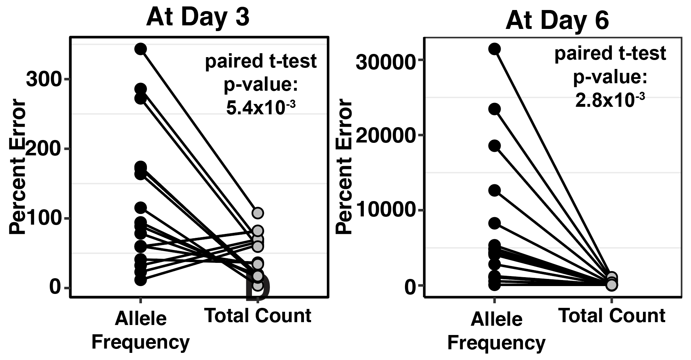

Home
Last updated: 2024-10-14
Checks: 1 1
Knit directory: duplex_sequencing_screen/
This reproducible R Markdown analysis was created with workflowr (version 1.6.2). The Checks tab describes the reproducibility checks that were applied when the results were created. The Past versions tab lists the development history.
The R Markdown file has unstaged changes. To know which version of
the R Markdown file created these results, you’ll want to first commit
it to the Git repo. If you’re still working on the analysis, you can
ignore this warning. When you’re finished, you can run
wflow_publish to commit the R Markdown file and build the
HTML.
Great! You are using Git for version control. Tracking code development and connecting the code version to the results is critical for reproducibility.
The results in this page were generated with repository version 5eba7e0. See the Past versions tab to see a history of the changes made to the R Markdown and HTML files.
Note that you need to be careful to ensure that all relevant files for
the analysis have been committed to Git prior to generating the results
(you can use wflow_publish or
wflow_git_commit). workflowr only checks the R Markdown
file, but you know if there are other scripts or data files that it
depends on. Below is the status of the Git repository when the results
were generated:
Ignored files:
Ignored: .Rhistory
Ignored: .Rproj.user/
Ignored: code/archive/
Ignored: data/Consensus_Data/.Rhistory
Ignored: data/Consensus_Data/Novogene_lane11/.DS_Store
Ignored: data/Consensus_Data/Novogene_lane11/sample1/.DS_Store
Ignored: data/Consensus_Data/Novogene_lane11/sample2/.DS_Store
Ignored: data/Consensus_Data/Novogene_lane11/sample3/.DS_Store
Ignored: data/Consensus_Data/Novogene_lane11/sample4/.DS_Store
Ignored: data/Consensus_Data/Novogene_lane11/sample7/.DS_Store
Ignored: data/Consensus_Data/Novogene_lane12/.DS_Store
Ignored: data/Consensus_Data/Novogene_lane12/sample1/.DS_Store
Ignored: data/Consensus_Data/Novogene_lane13/.DS_Store
Ignored: data/Consensus_Data/Novogene_lane13/sample1/.DS_Store
Ignored: data/Consensus_Data/Novogene_lane13/sample10/.DS_Store
Ignored: data/Consensus_Data/Novogene_lane13/sample11/.DS_Store
Ignored: data/Consensus_Data/Novogene_lane13/sample12/.DS_Store
Ignored: data/Consensus_Data/Novogene_lane13/sample7/.DS_Store
Ignored: data/Consensus_Data/Novogene_lane13/sample8/variant_caller_outputs/
Ignored: data/Consensus_Data/Novogene_lane13/sample9/.DS_Store
Ignored: data/Consensus_Data/Novogene_lane14/.DS_Store
Ignored: data/Consensus_Data/Novogene_lane14/sample10_combined/.DS_Store
Ignored: data/Consensus_Data/Novogene_lane14/sample11/.DS_Store
Ignored: data/Consensus_Data/Novogene_lane14/sample12/.DS_Store
Ignored: data/Consensus_Data/Novogene_lane14/sample13/
Ignored: data/Consensus_Data/Novogene_lane14/sample14_combined/.DS_Store
Ignored: data/Consensus_Data/Novogene_lane14/sample14b/
Ignored: data/Consensus_Data/Novogene_lane14/sample15/.DS_Store
Ignored: data/Consensus_Data/Novogene_lane14/sample16/.DS_Store
Ignored: data/Consensus_Data/Novogene_lane14/sample17/.DS_Store
Ignored: data/Consensus_Data/Novogene_lane14/sample18/.DS_Store
Ignored: data/Consensus_Data/Novogene_lane14/sample1_combined/
Ignored: data/Consensus_Data/Novogene_lane14/sample7/variant_caller_outputs/duplex/
Ignored: data/Consensus_Data/Novogene_lane14/sample8/variant_caller_outputs/
Ignored: data/Consensus_Data/Novogene_lane14/sample9/.DS_Store
Ignored: data/Consensus_Data/Novogene_lane2/
Ignored: data/Consensus_Data/Novogene_lane3/
Ignored: data/Consensus_Data/Novogene_lane4/
Ignored: data/Consensus_Data/Novogene_lane5/
Ignored: data/Consensus_Data/Novogene_lane6/
Ignored: data/Consensus_Data/Novogene_lane7/
Ignored: data/Consensus_Data/R01Figure/.DS_Store
Ignored: data/Consensus_Data/Ranomics_Pooled/
Ignored: data/Consensus_Data/archive/
Ignored: data/Consensus_Data/novogene_lane15/.DS_Store
Ignored: data/Consensus_Data/novogene_lane15/egfr/.DS_Store
Ignored: data/Consensus_Data/novogene_lane15/egfr/sample_1/.DS_Store
Ignored: data/Consensus_Data/novogene_lane15/egfr/sample_1/firstrun(lowsequencing)/.DS_Store
Ignored: data/Consensus_Data/novogene_lane15/egfr/sample_1/firstrun(lowsequencing)/sscs/
Ignored: data/Consensus_Data/novogene_lane15/egfr/sample_1/sscs/.DS_Store
Ignored: data/Consensus_Data/novogene_lane15/egfr/sample_2/.DS_Store
Ignored: data/Consensus_Data/novogene_lane15/egfr/sample_2/firstrun(lowsequencing)/.DS_Store
Ignored: data/Consensus_Data/novogene_lane15/egfr/sample_2/firstrun(lowsequencing)/sscs/
Ignored: data/Consensus_Data/novogene_lane15/egfr/sample_2/sscs/.DS_Store
Ignored: data/Consensus_Data/novogene_lane15/egfr/sample_2/sscs/sscs_sorted_filtered.tsv.gz
Ignored: data/Consensus_Data/novogene_lane15/sample_3/.DS_Store
Ignored: data/Consensus_Data/novogene_lane15/sample_3/firstrun(lowsequencing)/.DS_Store
Ignored: data/Consensus_Data/novogene_lane15/sample_3/firstrun(lowsequencing)/sscs/sscs_sorted_filtered.tsv.gz
Ignored: data/Consensus_Data/novogene_lane15/sample_3/ngs/Sample3_sorted_filtered.tsv.gz
Ignored: data/Consensus_Data/novogene_lane15/sample_3/sscs/sscs_sorted_filtered.tsv.gz
Ignored: data/Consensus_Data/novogene_lane15/sample_4/.DS_Store
Ignored: data/Consensus_Data/novogene_lane15/sample_4/firstrun(lowsequencing)/.DS_Store
Ignored: data/Consensus_Data/novogene_lane15/sample_4/firstrun(lowsequencing)/sscs/sscs_sorted_filtered.tsv.gz
Ignored: data/Consensus_Data/novogene_lane15/sample_4/sscs/sscs_sorted_filtered.tsv.gz
Ignored: data/Consensus_Data/novogene_lane15/sample_5/.DS_Store
Ignored: data/Consensus_Data/novogene_lane15/sample_5/firstrun(lowsequencing)/.DS_Store
Ignored: data/Consensus_Data/novogene_lane15/sample_5/firstrun(lowsequencing)/sscs/sscs_sorted_filtered.tsv.gz
Ignored: data/Consensus_Data/novogene_lane15/sample_5/firstrun(lowsequencing)/sscs/variant_caller_outputs/.empty/
Ignored: data/Consensus_Data/novogene_lane15/sample_5/sscs/sscs_sorted_filtered.tsv.gz
Ignored: data/Consensus_Data/novogene_lane15/sample_6/.DS_Store
Ignored: data/Consensus_Data/novogene_lane15/sample_6/firstrun(lowsequencing)/.DS_Store
Ignored: data/Consensus_Data/novogene_lane15/sample_6/firstrun(lowsequencing)/sscs/sscs_sorted_filtered.tsv.gz
Ignored: data/Consensus_Data/novogene_lane15/sample_6/sscs/.DS_Store
Ignored: data/Consensus_Data/novogene_lane15/sample_6/sscs/sscs_sorted_filtered.tsv.gz
Ignored: data/Consensus_Data/novogene_lane15/sample_7/.DS_Store
Ignored: data/Consensus_Data/novogene_lane15/sample_7/firstrun(lowsequencing)/.DS_Store
Ignored: data/Consensus_Data/novogene_lane15/sample_7/firstrun(lowsequencing)/sscs/sscs_sorted_filtered.tsv.gz
Ignored: data/Consensus_Data/novogene_lane15/sample_7/sscs/.DS_Store
Ignored: data/Consensus_Data/novogene_lane15/sample_7/sscs/sscs_sorted_filtered.tsv.gz
Ignored: data/Consensus_Data/novogene_lane16a/.DS_Store
Ignored: data/Consensus_Data/novogene_lane16a/Sample10/.DS_Store
Ignored: data/Consensus_Data/novogene_lane16a/Sample10/sscs/sscs_sorted_filtered.tsv.gz
Ignored: data/Consensus_Data/novogene_lane16a/Sample11/.DS_Store
Ignored: data/Consensus_Data/novogene_lane16a/Sample11/sscs/sscs_sorted_filtered.tsv.gz
Ignored: data/Consensus_Data/novogene_lane16a/Sample12/.DS_Store
Ignored: data/Consensus_Data/novogene_lane16a/Sample12/sscs/
Ignored: data/Consensus_Data/novogene_lane16a/Sample13/.DS_Store
Ignored: data/Consensus_Data/novogene_lane16a/Sample13/sscs/
Ignored: data/Consensus_Data/novogene_lane16a/Sample14/.DS_Store
Ignored: data/Consensus_Data/novogene_lane16a/Sample14/sscs/sscs_sorted_filtered.tsv.gz
Ignored: data/Consensus_Data/novogene_lane16a/Sample1_combined/.DS_Store
Ignored: data/Consensus_Data/novogene_lane16a/Sample1_combined/sscs/sscs_sorted_filtered.tsv.gz
Ignored: data/Consensus_Data/novogene_lane16a/Sample2/.DS_Store
Ignored: data/Consensus_Data/novogene_lane16a/Sample3/.DS_Store
Ignored: data/Consensus_Data/novogene_lane16a/Sample3/sscs/sscs_sorted_filtered.tsv.gz
Ignored: data/Consensus_Data/novogene_lane16a/Sample4/.DS_Store
Ignored: data/Consensus_Data/novogene_lane16a/Sample4/sscs/sscs_sorted_filtered.tsv.gz
Ignored: data/Consensus_Data/novogene_lane16a/Sample5/.DS_Store
Ignored: data/Consensus_Data/novogene_lane16a/Sample5/sscs/sscs_sorted_filtered.tsv.gz
Ignored: data/Consensus_Data/novogene_lane16a/Sample6/.DS_Store
Ignored: data/Consensus_Data/novogene_lane16a/Sample6/sscs/sscs_sorted_filtered.tsv.gz
Ignored: data/Consensus_Data/novogene_lane16a/Sample7/.DS_Store
Ignored: data/Consensus_Data/novogene_lane16a/Sample7/sscs/sscs_sorted_filtered.tsv.gz
Ignored: data/Consensus_Data/novogene_lane16a/Sample8/.DS_Store
Ignored: data/Consensus_Data/novogene_lane16a/Sample8/sscs/sscs_sorted_filtered.tsv.gz
Ignored: data/Consensus_Data/novogene_lane16a/Sample9/.DS_Store
Ignored: data/Consensus_Data/novogene_lane16a/Sample9/sscs/sscs_sorted_filtered.tsv.gz
Ignored: data/Consensus_Data/novogene_lane16a/duplex/
Ignored: data/Consensus_Data/novogene_lane16b/Sample10/.DS_Store
Ignored: data/Consensus_Data/novogene_lane16b/Sample11/
Ignored: data/Consensus_Data/novogene_lane16b/Sample15/.DS_Store
Ignored: data/Consensus_Data/novogene_lane16b/Sample1_combined/.DS_Store
Ignored: data/Consensus_Data/novogene_lane16b/Sample2/.DS_Store
Ignored: data/Consensus_Data/novogene_lane16b/Sample3/.DS_Store
Ignored: data/Consensus_Data/novogene_lane16b/Sample4/.DS_Store
Ignored: data/Consensus_Data/novogene_lane16b/Sample5/.DS_Store
Ignored: data/Consensus_Data/novogene_lane16b/Sample6/.DS_Store
Ignored: data/Consensus_Data/novogene_lane16b/Sample7_combined/.DS_Store
Ignored: data/Consensus_Data/novogene_lane16b/Sample8_combined/.DS_Store
Ignored: data/Consensus_Data/novogene_lane16b/Sample8_combined/sscs/variant_caller_outputs/archive/
Ignored: data/Consensus_Data/novogene_lane16b/Sample9/.DS_Store
Ignored: data/Consensus_Data/novogene_lane17/.DS_Store
Ignored: data/Consensus_Data/novogene_lane17/sample10/.DS_Store
Ignored: data/Consensus_Data/novogene_lane17/sample10/duplex/variant_caller_outputs/
Ignored: data/Consensus_Data/novogene_lane17/sample10/sscs/sscs_sorted_filtered.tsv.gz
Ignored: data/Consensus_Data/novogene_lane17/sample11/.DS_Store
Ignored: data/Consensus_Data/novogene_lane17/sample11/sscs/sscs_sorted_filtered.tsv.gz
Ignored: data/Consensus_Data/novogene_lane17/sample1_combined/.DS_Store
Ignored: data/Consensus_Data/novogene_lane17/sample1_combined/low_depth/duplex/low_depth/
Ignored: data/Consensus_Data/novogene_lane17/sample1_combined/low_depth/sscs/sscs_sorted_filtered.tsv.gz
Ignored: data/Consensus_Data/novogene_lane17/sample1_combined/sscs/sscs_sorted_filtered.tsv.gz
Ignored: data/Consensus_Data/novogene_lane17/sample2/.DS_Store
Ignored: data/Consensus_Data/novogene_lane17/sample2/sscs/sscs_sorted_filtered.tsv.gz
Ignored: data/Consensus_Data/novogene_lane17/sample3/.DS_Store
Ignored: data/Consensus_Data/novogene_lane17/sample3/sscs/sscs_sorted_filtered.tsv.gz
Ignored: data/Consensus_Data/novogene_lane17/sample4/.DS_Store
Ignored: data/Consensus_Data/novogene_lane17/sample4/sscs/sscs_sorted_filtered.tsv.gz
Ignored: data/Consensus_Data/novogene_lane17/sample5/.DS_Store
Ignored: data/Consensus_Data/novogene_lane17/sample5/low_seq_depth/sscs/sscs_sorted_filtered.tsv.gz
Ignored: data/Consensus_Data/novogene_lane17/sample5/sscs/sscs_sorted_filtered.tsv.gz
Ignored: data/Consensus_Data/novogene_lane17/sample6/.DS_Store
Ignored: data/Consensus_Data/novogene_lane17/sample6/low_seq_depths/sscs/sscs_sorted_filtered.tsv.gz
Ignored: data/Consensus_Data/novogene_lane17/sample6/sscs/sscs_sorted_filtered.tsv.gz
Ignored: data/Consensus_Data/novogene_lane17/sample7/.DS_Store
Ignored: data/Consensus_Data/novogene_lane17/sample7/low_seq_depths/sscs/sscs_sorted_filtered.tsv.gz
Ignored: data/Consensus_Data/novogene_lane17/sample7/sscs/sscs_sorted_filtered.tsv.gz
Ignored: data/Consensus_Data/novogene_lane17/sample8/.DS_Store
Ignored: data/Consensus_Data/novogene_lane17/sample8/sscs/sscs_sorted_filtered.tsv.gz
Ignored: data/Consensus_Data/novogene_lane17/sample9/.DS_Store
Ignored: data/Consensus_Data/novogene_lane17/sample9/sscs/sscs_sorted_filtered.tsv.gz
Ignored: data/Consensus_Data/novogene_lane17b/.DS_Store
Ignored: data/Consensus_Data/novogene_lane17b/Sample1 copy 2/
Ignored: data/Consensus_Data/novogene_lane17b/Sample1 copy 3/
Ignored: data/Consensus_Data/novogene_lane17b/Sample1/.DS_Store
Ignored: data/Consensus_Data/novogene_lane17b/Sample1/duplex/.DS_Store
Ignored: data/Consensus_Data/novogene_lane17b/Sample1/sscs/sscs_sorted_filtered.tsv.gz
Ignored: data/Consensus_Data/novogene_lane17b/Sample2/.DS_Store
Ignored: data/Consensus_Data/novogene_lane17b/Sample2/duplex/.DS_Store
Ignored: data/Consensus_Data/novogene_lane18/.DS_Store
Ignored: data/Consensus_Data/novogene_lane18/sample1/.DS_Store
Ignored: data/Consensus_Data/novogene_lane18/sample1/duplex/.DS_Store
Ignored: data/Consensus_Data/novogene_lane18/sample1/l298l/.DS_Store
Ignored: data/Consensus_Data/novogene_lane18/sample1/l298l/duplex/.DS_Store
Ignored: data/Consensus_Data/novogene_lane18/sample1/l298l/sscs/.DS_Store
Ignored: data/Consensus_Data/novogene_lane18/sample1/nol298l/.DS_Store
Ignored: data/Consensus_Data/novogene_lane18/sample1/nol298l/duplex/.DS_Store
Ignored: data/Consensus_Data/novogene_lane18/sample1/nol298l/sscs/.DS_Store
Ignored: data/Consensus_Data/novogene_lane18/sample1/sscs/.DS_Store
Ignored: data/Consensus_Data/novogene_lane18/sample10/.DS_Store
Ignored: data/Consensus_Data/novogene_lane18/sample10/l298l/.DS_Store
Ignored: data/Consensus_Data/novogene_lane18/sample10/ngs/.DS_Store
Ignored: data/Consensus_Data/novogene_lane18/sample10/nol298l/.DS_Store
Ignored: data/Consensus_Data/novogene_lane18/sample10/sscs/.DS_Store
Ignored: data/Consensus_Data/novogene_lane18/sample11/.DS_Store
Ignored: data/Consensus_Data/novogene_lane18/sample11/l298l/.DS_Store
Ignored: data/Consensus_Data/novogene_lane18/sample11/nol298l/.DS_Store
Ignored: data/Consensus_Data/novogene_lane18/sample11/sscs/.DS_Store
Ignored: data/Consensus_Data/novogene_lane18/sample12/.DS_Store
Ignored: data/Consensus_Data/novogene_lane18/sample13/.DS_Store
Ignored: data/Consensus_Data/novogene_lane18/sample13/duplex/.DS_Store
Ignored: data/Consensus_Data/novogene_lane18/sample13/l298l/.DS_Store
Ignored: data/Consensus_Data/novogene_lane18/sample13/nol298l/.DS_Store
Ignored: data/Consensus_Data/novogene_lane18/sample13/nol298l/duplex/.DS_Store
Ignored: data/Consensus_Data/novogene_lane18/sample13/sscs/.DS_Store
Ignored: data/Consensus_Data/novogene_lane18/sample14/.DS_Store
Ignored: data/Consensus_Data/novogene_lane18/sample14/duplex/
Ignored: data/Consensus_Data/novogene_lane18/sample14/l298l/.DS_Store
Ignored: data/Consensus_Data/novogene_lane18/sample14/l298l/duplex/variant_caller_outputs/
Ignored: data/Consensus_Data/novogene_lane18/sample14/nol298l/.DS_Store
Ignored: data/Consensus_Data/novogene_lane18/sample14/nol298l/duplex/.DS_Store
Ignored: data/Consensus_Data/novogene_lane18/sample14/nol298l/duplex/variant_caller_outputs/
Ignored: data/Consensus_Data/novogene_lane18/sample14/sscs/.DS_Store
Ignored: data/Consensus_Data/novogene_lane18/sample15/.DS_Store
Ignored: data/Consensus_Data/novogene_lane18/sample15/duplex/.DS_Store
Ignored: data/Consensus_Data/novogene_lane18/sample15/l298l/.DS_Store
Ignored: data/Consensus_Data/novogene_lane18/sample15/nol298l/.DS_Store
Ignored: data/Consensus_Data/novogene_lane18/sample15/sscs/.DS_Store
Ignored: data/Consensus_Data/novogene_lane18/sample16/.DS_Store
Ignored: data/Consensus_Data/novogene_lane18/sample16/l298l/.DS_Store
Ignored: data/Consensus_Data/novogene_lane18/sample16/nol298l/.DS_Store
Ignored: data/Consensus_Data/novogene_lane18/sample16/sscs/.DS_Store
Ignored: data/Consensus_Data/novogene_lane18/sample17/.DS_Store
Ignored: data/Consensus_Data/novogene_lane18/sample18/.DS_Store
Ignored: data/Consensus_Data/novogene_lane18/sample18/duplex/.DS_Store
Ignored: data/Consensus_Data/novogene_lane18/sample18/l298l/.DS_Store
Ignored: data/Consensus_Data/novogene_lane18/sample18/l298l/duplex/.DS_Store
Ignored: data/Consensus_Data/novogene_lane18/sample18/l298l/sscs/.DS_Store
Ignored: data/Consensus_Data/novogene_lane18/sample18/nol298l/.DS_Store
Ignored: data/Consensus_Data/novogene_lane18/sample18/nol298l/duplex/.DS_Store
Ignored: data/Consensus_Data/novogene_lane18/sample18/nol298l/sscs/.DS_Store
Ignored: data/Consensus_Data/novogene_lane18/sample18/sscs/.DS_Store
Ignored: data/Consensus_Data/novogene_lane18/sample2/.DS_Store
Ignored: data/Consensus_Data/novogene_lane18/sample2/l298l/.DS_Store
Ignored: data/Consensus_Data/novogene_lane18/sample2/nol298l/.DS_Store
Ignored: data/Consensus_Data/novogene_lane18/sample2/sscs/.DS_Store
Ignored: data/Consensus_Data/novogene_lane18/sample3/.DS_Store
Ignored: data/Consensus_Data/novogene_lane18/sample3/duplex/.DS_Store
Ignored: data/Consensus_Data/novogene_lane18/sample3/l298l/.DS_Store
Ignored: data/Consensus_Data/novogene_lane18/sample3/nol298l/.DS_Store
Ignored: data/Consensus_Data/novogene_lane18/sample3/sscs/.DS_Store
Ignored: data/Consensus_Data/novogene_lane18/sample4/.DS_Store
Ignored: data/Consensus_Data/novogene_lane18/sample4/l298l/.DS_Store
Ignored: data/Consensus_Data/novogene_lane18/sample4/l298l/duplex/.DS_Store
Ignored: data/Consensus_Data/novogene_lane18/sample4/l298l/sscs/.DS_Store
Ignored: data/Consensus_Data/novogene_lane18/sample4/nol298l/.DS_Store
Ignored: data/Consensus_Data/novogene_lane18/sample4/nol298l/sscs/.DS_Store
Ignored: data/Consensus_Data/novogene_lane18/sample4/sscs/.DS_Store
Ignored: data/Consensus_Data/novogene_lane18/sample5/.DS_Store
Ignored: data/Consensus_Data/novogene_lane18/sample5/l298l/.DS_Store
Ignored: data/Consensus_Data/novogene_lane18/sample5/nol298l/.DS_Store
Ignored: data/Consensus_Data/novogene_lane18/sample5/sscs/.DS_Store
Ignored: data/Consensus_Data/novogene_lane18/sample6/.DS_Store
Ignored: data/Consensus_Data/novogene_lane18/sample6/duplex/.DS_Store
Ignored: data/Consensus_Data/novogene_lane18/sample6/l298l/.DS_Store
Ignored: data/Consensus_Data/novogene_lane18/sample6/nol298l/.DS_Store
Ignored: data/Consensus_Data/novogene_lane18/sample6/sscs/.DS_Store
Ignored: data/Consensus_Data/novogene_lane18/sample7/.DS_Store
Ignored: data/Consensus_Data/novogene_lane18/sample8/.DS_Store
Ignored: data/Consensus_Data/novogene_lane18/sample9/.DS_Store
Ignored: data/Consensus_Data/novogene_lane18/sample9/l298l/.DS_Store
Ignored: data/Consensus_Data/novogene_lane18/sample9/nol298l/.DS_Store
Ignored: data/Consensus_Data/novogene_lane18/sample9/sscs/.DS_Store
Ignored: data/Consensus_Data/novogene_lane18/tlane18a_sample3/.DS_Store
Ignored: data/Consensus_Data/novogene_lane18/tlane18a_sample3/duplex/
Ignored: data/Consensus_Data/novogene_lane18/tlane18a_sample3/l298l/.DS_Store
Ignored: data/Consensus_Data/novogene_lane18/tlane18a_sample3/l298l/duplex/variant_caller_outputs/
Ignored: data/Consensus_Data/novogene_lane18/tlane18a_sample3/l298l/sscs/.DS_Store
Ignored: data/Consensus_Data/novogene_lane18/tlane18a_sample3/nol298l/.DS_Store
Ignored: data/Consensus_Data/novogene_lane18/tlane18a_sample3/nol298l/duplex/variant_caller_outputs/
Ignored: data/Consensus_Data/novogene_lane18/tlane18a_sample3/nol298l/sscs/.DS_Store
Ignored: data/Consensus_Data/novogene_lane18/tlane18a_sample3/sscs/.DS_Store
Ignored: data/Consensus_Data/novogene_lane18/tlane18a_sample5/.DS_Store
Ignored: data/Consensus_Data/novogene_lane18/tlane18a_sample5/duplex/
Ignored: data/Consensus_Data/novogene_lane18/tlane18a_sample5/l298l/duplex/variant_caller_outputs/
Ignored: data/Consensus_Data/novogene_lane18/tlane18a_sample5/nol298l/duplex/variant_caller_outputs/
Ignored: data/Consensus_Data/novogene_lane18/tlane18a_sample6/duplex/
Ignored: data/Consensus_Data/novogene_lane18/tlane18a_sample6/l298l/duplex/variant_caller_outputs/
Ignored: data/Consensus_Data/novogene_lane18/tlane18a_sample6/l298l/sscs/.DS_Store
Ignored: data/Consensus_Data/novogene_lane18/tlane18a_sample6/nol298l/duplex/variant_caller_outputs/
Ignored: data/Consensus_Data/novogene_lane18/tlane18a_sample6/nol298l/sscs/.DS_Store
Ignored: data/Consensus_Data/novogene_lane18/tlane18a_sample6/sscs/.DS_Store
Ignored: data/Consensus_Data/novogene_lane19/.DS_Store
Ignored: data/Consensus_Data/novogene_lane19/Ln19a_Sample1/.DS_Store
Ignored: data/Consensus_Data/novogene_lane19/Ln19a_Sample10/.DS_Store
Ignored: data/Consensus_Data/novogene_lane19/Ln19a_Sample11/.DS_Store
Ignored: data/Consensus_Data/novogene_lane19/Ln19a_Sample12/.DS_Store
Ignored: data/Consensus_Data/novogene_lane19/Ln19a_Sample12/duplex/variant_caller_outputs/
Ignored: data/Consensus_Data/novogene_lane19/Ln19a_Sample2/.DS_Store
Ignored: data/Consensus_Data/novogene_lane19/Ln19a_Sample3/.DS_Store
Ignored: data/Consensus_Data/novogene_lane19/Ln19a_Sample4/.DS_Store
Ignored: data/Consensus_Data/novogene_lane19/Ln19a_Sample5/.DS_Store
Ignored: data/Consensus_Data/novogene_lane19/Ln19a_Sample6/.DS_Store
Ignored: data/Consensus_Data/novogene_lane19/Ln19a_Sample7/.DS_Store
Ignored: data/Consensus_Data/novogene_lane19/Ln19a_Sample7/sscs/.DS_Store
Ignored: data/Consensus_Data/novogene_lane19/Ln19a_Sample8/.DS_Store
Ignored: data/Consensus_Data/novogene_lane19/Ln19a_Sample9/.DS_Store
Ignored: data/Consensus_Data/novogene_lane19/Ln19b_Sample1/.DS_Store
Ignored: data/Consensus_Data/novogene_lane19/Ln19b_Sample10/.DS_Store
Ignored: data/Consensus_Data/novogene_lane19/Ln19b_Sample11/.DS_Store
Ignored: data/Consensus_Data/novogene_lane19/Ln19b_Sample11/duplex/variant_caller_outputs/
Ignored: data/Consensus_Data/novogene_lane19/Ln19b_Sample12/.DS_Store
Ignored: data/Consensus_Data/novogene_lane19/Ln19b_Sample13/.DS_Store
Ignored: data/Consensus_Data/novogene_lane19/Ln19b_Sample14/.DS_Store
Ignored: data/Consensus_Data/novogene_lane19/Ln19b_Sample15/.DS_Store
Ignored: data/Consensus_Data/novogene_lane19/Ln19b_Sample16/.DS_Store
Ignored: data/Consensus_Data/novogene_lane19/Ln19b_Sample2/.DS_Store
Ignored: data/Consensus_Data/novogene_lane19/Ln19b_Sample3/.DS_Store
Ignored: data/Consensus_Data/novogene_lane19/Ln19b_Sample4/.DS_Store
Ignored: data/Consensus_Data/novogene_lane19/Ln19b_Sample5/.DS_Store
Ignored: data/Consensus_Data/novogene_lane19/Ln19b_Sample6/.DS_Store
Ignored: data/Consensus_Data/novogene_lane19/Ln19b_Sample7/.DS_Store
Ignored: data/Consensus_Data/novogene_lane19/Ln19b_Sample8/.DS_Store
Ignored: data/Consensus_Data/novogene_lane19/Ln19b_Sample9/.DS_Store
Ignored: data/Consensus_Data/novogene_lane19_20/.DS_Store
Ignored: data/Consensus_Data/novogene_lane19_20/Ln19a_Sample10/.DS_Store
Ignored: data/Consensus_Data/novogene_lane19_20/Ln19a_Sample11/.DS_Store
Ignored: data/Consensus_Data/novogene_lane19_20/Ln19a_Sample11/sscs/.DS_Store
Ignored: data/Consensus_Data/novogene_lane19_20/Ln19a_Sample2/.DS_Store
Ignored: data/Consensus_Data/novogene_lane19_20/Ln19a_Sample2/duplex/.DS_Store
Ignored: data/Consensus_Data/novogene_lane19_20/Ln19a_Sample2/sscs/.DS_Store
Ignored: data/Consensus_Data/novogene_lane19_20/Ln19a_Sample3/.DS_Store
Ignored: data/Consensus_Data/novogene_lane19_20/Ln19a_Sample3/sscs/.DS_Store
Ignored: data/Consensus_Data/novogene_lane19_20/Ln19a_Sample4/.DS_Store
Ignored: data/Consensus_Data/novogene_lane19_20/Ln19a_Sample5/.DS_Store
Ignored: data/Consensus_Data/novogene_lane19_20/Ln19a_Sample5/sscs/.DS_Store
Ignored: data/Consensus_Data/novogene_lane19_20/Ln19a_Sample6/.DS_Store
Ignored: data/Consensus_Data/novogene_lane19_20/Ln19a_Sample7/.DS_Store
Ignored: data/Consensus_Data/novogene_lane19_20/Ln19a_Sample8/.DS_Store
Ignored: data/Consensus_Data/novogene_lane19_20/Ln19a_Sample9/.DS_Store
Ignored: data/Consensus_Data/novogene_lane19_20/Ln19b_Sample9/.DS_Store
Ignored: data/Consensus_Data/novogene_lane22/.DS_Store
Ignored: data/Consensus_Data/novogene_lane22/Lane22_Sample1/.DS_Store
Ignored: data/Consensus_Data/novogene_lane22/Lane22_Sample1/sscs/.DS_Store
Ignored: data/Consensus_Data/novogene_lane22/Lane22_Sample2/.DS_Store
Ignored: data/Consensus_Data/novogene_lane22/Lane22_Sample3/.DS_Store
Ignored: data/Consensus_Data/novogene_lane22/Lane22_Sample4/.DS_Store
Ignored: data/Consensus_Data/novogene_lane22/Lane22_Sample5/.DS_Store
Ignored: data/Consensus_Data/novogene_lane22/Lane22_Sample6/.DS_Store
Ignored: data/Consensus_Data/novogene_lane22/Lane22_Sample6/duplex/variant_caller_outputs/
Ignored: data/Consensus_Data/novogene_lane22/Lane22_Sample7/duplex/variant_caller_outputs/
Ignored: data/Consensus_Data/novogene_lane22/Lane22_Sample7/sscs/variant_caller_outputs/
Ignored: data/Consensus_Data/novogene_lane22/Lane22_Sample8/duplex/variant_caller_outputs/
Ignored: data/Consensus_Data/novogene_lane22/Lane22_Sample8/sscs/variant_caller_outputs/
Ignored: data/Consensus_Data/novogene_lane23/.DS_Store
Ignored: data/Consensus_Data/novogene_lane23/Sample13/.DS_Store
Ignored: data/Consensus_Data/novogene_lane23/Sample13/duplex/.DS_Store
Ignored: data/Consensus_Data/novogene_lane23/Sample13/sscs/.DS_Store
Ignored: data/Consensus_Data/novogene_lane23/Sample14/.DS_Store
Ignored: data/Consensus_Data/novogene_lane23/Sample15/.DS_Store
Ignored: data/Consensus_Data/novogene_lane23/Sample15/duplex/.DS_Store
Ignored: data/Consensus_Data/novogene_lane23/Sample15/sscs/.DS_Store
Ignored: data/Consensus_Data/novogene_lane23/Sample16/.DS_Store
Ignored: data/Consensus_Data/novogene_lane23/Sample17/.DS_Store
Ignored: data/Consensus_Data/novogene_lane23/Sample17/sscs/.DS_Store
Ignored: data/Consensus_Data/novogene_lane23/Sample18/.DS_Store
Ignored: data/Consensus_Data/novogene_lane23/Sample18/duplex/.DS_Store
Ignored: data/Consensus_Data/novogene_lane23/Sample18/sscs/.DS_Store
Ignored: data/Consensus_Data/novogene_lane23/Sample19/.DS_Store
Ignored: data/Consensus_Data/novogene_lane23/Sample19/sscs/.DS_Store
Ignored: data/Consensus_Data/novogene_lane23/Sample20/.DS_Store
Ignored: data/Consensus_Data/novogene_lane23/Sample20/duplex/.DS_Store
Ignored: data/Consensus_Data/novogene_lane23/Sample20/sscs/.DS_Store
Ignored: data/Consensus_Data/novogene_lane23/Sample21/.DS_Store
Ignored: data/Consensus_Data/novogene_lane23/Sample21/duplex/.DS_Store
Ignored: data/Consensus_Data/novogene_lane23/Sample21/sscs/.DS_Store
Ignored: data/Consensus_Data/novogene_lane23/Sample22/.DS_Store
Ignored: data/Consensus_Data/novogene_lane23/Sample22/sscs/.DS_Store
Ignored: data/Consensus_Data/novogene_lane23/Sample23/.DS_Store
Ignored: data/Consensus_Data/novogene_lane23/Sample23/sscs/.DS_Store
Ignored: data/Consensus_Data/novogene_lane23/Sample24/.DS_Store
Ignored: data/Consensus_Data/novogene_lane23/Sample25/.DS_Store
Ignored: data/Consensus_Data/novogene_lane23/Sample26/.DS_Store
Ignored: data/Consensus_Data/novogene_lane23/Sample26/sscs/.DS_Store
Ignored: data/Consensus_Data/novogene_lane23/Sample27/.DS_Store
Ignored: data/Consensus_Data/novogene_lane23/Sample27/duplex/.DS_Store
Ignored: data/Consensus_Data/novogene_lane23/Sample27/sscs/.DS_Store
Ignored: data/Consensus_Data/novogene_lane25a/.DS_Store
Ignored: data/Consensus_Data/novogene_lane25a/Lane_25a_10/.DS_Store
Ignored: data/Consensus_Data/novogene_lane25a/Lane_25a_10/duplex/variant_caller_outputs/
Ignored: data/Consensus_Data/novogene_lane25a/Lane_25a_10/sscs/variant_caller_outputs/
Ignored: data/Consensus_Data/novogene_lane25a/Lane_25a_11/.DS_Store
Ignored: data/Consensus_Data/novogene_lane25a/Lane_25a_11/duplex/variant_caller_outputs/
Ignored: data/Consensus_Data/novogene_lane25a/Lane_25a_11/sscs/variant_caller_outputs/
Ignored: data/Consensus_Data/novogene_lane25a/Lane_25a_12/.DS_Store
Ignored: data/Consensus_Data/novogene_lane25a/Lane_25a_12/duplex/variant_caller_outputs/
Ignored: data/Consensus_Data/novogene_lane25a/Lane_25a_12/sscs/variant_caller_outputs/
Ignored: data/Consensus_Data/novogene_lane25a/Lane_25a_13/.DS_Store
Ignored: data/Consensus_Data/novogene_lane25a/Lane_25a_13/duplex/variant_caller_outputs/
Ignored: data/Consensus_Data/novogene_lane25a/Lane_25a_13/sscs/variant_caller_outputs/
Ignored: data/Consensus_Data/novogene_lane25a/Lane_25a_14/.DS_Store
Ignored: data/Consensus_Data/novogene_lane25a/Lane_25a_14/duplex/variant_caller_outputs/
Ignored: data/Consensus_Data/novogene_lane25a/Lane_25a_14/sscs/variant_caller_outputs/
Ignored: data/Consensus_Data/novogene_lane25a/Lane_25a_15/.DS_Store
Ignored: data/Consensus_Data/novogene_lane25a/Lane_25a_15/duplex/variant_caller_outputs/
Ignored: data/Consensus_Data/novogene_lane25a/Lane_25a_15/sscs/.DS_Store
Ignored: data/Consensus_Data/novogene_lane25a/Lane_25a_15/sscs/variant_caller_outputs/
Ignored: data/Consensus_Data/novogene_lane25a/Lane_25a_16/.DS_Store
Ignored: data/Consensus_Data/novogene_lane25a/Lane_25a_16/duplex/variant_caller_outputs/
Ignored: data/Consensus_Data/novogene_lane25a/Lane_25a_16/sscs/variant_caller_outputs/
Ignored: data/Consensus_Data/novogene_lane25a/Lane_25a_17/.DS_Store
Ignored: data/Consensus_Data/novogene_lane25a/Lane_25a_17/duplex/variant_caller_outputs/
Ignored: data/Consensus_Data/novogene_lane25a/Lane_25a_17/sscs/variant_caller_outputs/
Ignored: data/Consensus_Data/novogene_lane25a/Lane_25a_18/.DS_Store
Ignored: data/Consensus_Data/novogene_lane25a/Lane_25a_18/duplex/variant_caller_outputs/
Ignored: data/Consensus_Data/novogene_lane25a/Lane_25a_18/sscs/variant_caller_outputs/
Ignored: data/Consensus_Data/novogene_lane25a/Lane_25a_19/.DS_Store
Ignored: data/Consensus_Data/novogene_lane25a/Lane_25a_19/duplex/variant_caller_outputs/
Ignored: data/Consensus_Data/novogene_lane25a/Lane_25a_19/sscs/variant_caller_outputs/
Ignored: data/Consensus_Data/novogene_lane25a/Lane_25a_20/.DS_Store
Ignored: data/Consensus_Data/novogene_lane25a/Lane_25a_20/duplex/variant_caller_outputs/
Ignored: data/Consensus_Data/novogene_lane25a/Lane_25a_20/sscs/variant_caller_outputs/
Ignored: data/Consensus_Data/novogene_lane25a/Lane_25a_22/.DS_Store
Ignored: data/Consensus_Data/novogene_lane25a/Lane_25a_22/duplex/variant_caller_outputs/
Ignored: data/Consensus_Data/novogene_lane25a/Lane_25a_22/sscs/variant_caller_outputs/
Ignored: data/Consensus_Data/novogene_lane25a/Lane_25a_23/.DS_Store
Ignored: data/Consensus_Data/novogene_lane25a/Lane_25a_23/duplex/variant_caller_outputs/
Ignored: data/Consensus_Data/novogene_lane25a/Lane_25a_23/sscs/variant_caller_outputs/
Ignored: data/Consensus_Data/novogene_lane25a/Lane_25a_24/.DS_Store
Ignored: data/Consensus_Data/novogene_lane25a/Lane_25a_24/duplex/variant_caller_outputs/
Ignored: data/Consensus_Data/novogene_lane25a/Lane_25a_24/sscs/variant_caller_outputs/
Ignored: data/Consensus_Data/novogene_lane25a/Lane_25a_5/.DS_Store
Ignored: data/Consensus_Data/novogene_lane25a/Lane_25a_5/duplex/.DS_Store
Ignored: data/Consensus_Data/novogene_lane25a/Lane_25a_5/duplex/variant_caller_outputs/
Ignored: data/Consensus_Data/novogene_lane25a/Lane_25a_5/sscs/.DS_Store
Ignored: data/Consensus_Data/novogene_lane25a/Lane_25a_5/sscs/variant_caller_outputs/
Ignored: data/Consensus_Data/novogene_lane25a/Lane_25a_6/.DS_Store
Ignored: data/Consensus_Data/novogene_lane25a/Lane_25a_6/duplex/variant_caller_outputs/
Ignored: data/Consensus_Data/novogene_lane25a/Lane_25a_6/sscs/variant_caller_outputs/
Ignored: data/Consensus_Data/novogene_lane25a/Lane_25a_7/.DS_Store
Ignored: data/Consensus_Data/novogene_lane25a/Lane_25a_7/duplex/variant_caller_outputs/
Ignored: data/Consensus_Data/novogene_lane25a/Lane_25a_7/sscs/variant_caller_outputs/
Ignored: data/Consensus_Data/novogene_lane25a/Lane_25a_8/.DS_Store
Ignored: data/Consensus_Data/novogene_lane25a/Lane_25a_8/duplex/variant_caller_outputs/
Ignored: data/Consensus_Data/novogene_lane25a/Lane_25a_8/sscs/variant_caller_outputs/
Ignored: data/Consensus_Data/novogene_lane25a/Lane_25a_9/.DS_Store
Ignored: data/Consensus_Data/novogene_lane25a/Lane_25a_9/duplex/variant_caller_outputs/
Ignored: data/Consensus_Data/novogene_lane25a/Lane_25a_9/sscs/.DS_Store
Ignored: data/Consensus_Data/novogene_lane25a/Lane_25a_9/sscs/variant_caller_outputs/
Ignored: data/Consensus_Data/novogene_lane27b/.DS_Store
Ignored: data/Consensus_Data/novogene_lane27b/L1D0_Sample13_combined/.DS_Store
Ignored: data/Consensus_Data/novogene_lane27b/L1D0_Sample13_combined/duplex/.DS_Store
Ignored: data/Consensus_Data/novogene_lane27b/L1D0_Sample13_combined/sscs/.DS_Store
Ignored: data/Consensus_Data/novogene_lane27b/L2D0_Sample14_combined/.DS_Store
Ignored: data/Consensus_Data/novogene_lane27b/L2D0_Sample14_combined/sscs/.DS_Store
Ignored: data/Consensus_Data/novogene_lane27b/sample1/.DS_Store
Ignored: data/Consensus_Data/novogene_lane27b/sample1/duplex/.DS_Store
Ignored: data/Consensus_Data/novogene_lane27b/sample1/sscs/.DS_Store
Ignored: data/Consensus_Data/novogene_lane27b/sample1/sscs/sscs_sorted_filtered.tsv.gz
Ignored: data/Consensus_Data/novogene_lane27b/sample11_12/.DS_Store
Ignored: data/Consensus_Data/novogene_lane27b/sample11_12/duplex/.DS_Store
Ignored: data/Consensus_Data/novogene_lane27b/sample11_12/sscs/.DS_Store
Ignored: data/Consensus_Data/novogene_lane27b/sample11_12/sscs/sscs_sorted_filtered.tsv.gz
Ignored: data/Consensus_Data/novogene_lane27b/sample11_12/sscs/variant_caller_outputs/.DS_Store
Ignored: data/Consensus_Data/novogene_lane27b/sample1_2/.DS_Store
Ignored: data/Consensus_Data/novogene_lane27b/sample1_2/duplex/.DS_Store
Ignored: data/Consensus_Data/novogene_lane27b/sample1_2/sscs/.DS_Store
Ignored: data/Consensus_Data/novogene_lane27b/sample1_2/sscs/sscs_sorted_filtered.tsv.gz
Ignored: data/Consensus_Data/novogene_lane27b/sample3/.DS_Store
Ignored: data/Consensus_Data/novogene_lane27b/sample3/duplex/variant_caller_outputs/
Ignored: data/Consensus_Data/novogene_lane27b/sample3/sscs/.DS_Store
Ignored: data/Consensus_Data/novogene_lane27b/sample3/sscs/sscs_sorted_filtered.tsv.gz
Ignored: data/Consensus_Data/novogene_lane27b/sample3_4/.DS_Store
Ignored: data/Consensus_Data/novogene_lane27b/sample3_4/sscs/sscs_sorted_filtered.tsv.gz
Ignored: data/Consensus_Data/novogene_lane27b/sample4/.DS_Store
Ignored: data/Consensus_Data/novogene_lane27b/sample4/duplex/.DS_Store
Ignored: data/Consensus_Data/novogene_lane27b/sample4/sscs/.DS_Store
Ignored: data/Consensus_Data/novogene_lane27b/sample4/sscs/sscs_sorted_filtered.tsv.gz
Ignored: data/Consensus_Data/novogene_lane27b/sample5/.DS_Store
Ignored: data/Consensus_Data/novogene_lane27b/sample5/duplex/.DS_Store
Ignored: data/Consensus_Data/novogene_lane27b/sample5/sscs/sscs_sorted_filtered.tsv.gz
Ignored: data/Consensus_Data/novogene_lane27b/sample5_6/.DS_Store
Ignored: data/Consensus_Data/novogene_lane27b/sample5_6/duplex/.DS_Store
Ignored: data/Consensus_Data/novogene_lane27b/sample5_6/sscs/.DS_Store
Ignored: data/Consensus_Data/novogene_lane27b/sample5_6/sscs/sscs_sorted_filtered.tsv.gz
Ignored: data/Consensus_Data/novogene_lane27b/sample6/.DS_Store
Ignored: data/Consensus_Data/novogene_lane27b/sample6/sscs/sscs_sorted_filtered.tsv.gz
Ignored: data/Consensus_Data/novogene_lane27b/sample7/.DS_Store
Ignored: data/Consensus_Data/novogene_lane27b/sample7/duplex/.DS_Store
Ignored: data/Consensus_Data/novogene_lane27b/sample7/sscs/.DS_Store
Ignored: data/Consensus_Data/novogene_lane27b/sample7/sscs/sscs_sorted_filtered.tsv.gz
Ignored: data/Consensus_Data/novogene_lane27b/sample7_8/.DS_Store
Ignored: data/Consensus_Data/novogene_lane27b/sample7_8/duplex/.DS_Store
Ignored: data/Consensus_Data/novogene_lane27b/sample7_8/sscs/.DS_Store
Ignored: data/Consensus_Data/novogene_lane27b/sample7_8/sscs/sscs_sorted_filtered.tsv.gz
Ignored: data/Consensus_Data/novogene_lane27b/sample8/.DS_Store
Ignored: data/Consensus_Data/novogene_lane27b/sample8/duplex/.DS_Store
Ignored: data/Consensus_Data/novogene_lane27b/sample8/sscs/.DS_Store
Ignored: data/Consensus_Data/novogene_lane27b/sample8/sscs/sscs_sorted_filtered.tsv.gz
Ignored: data/Consensus_Data/novogene_lane27b/sample9_10/.DS_Store
Ignored: data/Consensus_Data/novogene_lane27b/sample9_10/duplex/.DS_Store
Ignored: data/Consensus_Data/novogene_lane27b/sample9_10/sscs/.DS_Store
Ignored: data/Consensus_Data/novogene_lane27b/sample9_10/sscs/sscs_sorted_filtered.tsv.gz
Ignored: data/Consensus_Data/novogene_lane28a/.DS_Store
Ignored: data/Consensus_Data/novogene_lane28a/sample1/.DS_Store
Ignored: data/Consensus_Data/novogene_lane28a/sample1/duplex/.DS_Store
Ignored: data/Consensus_Data/novogene_lane28a/sample1/duplex/variant_caller_outputs/
Ignored: data/Consensus_Data/novogene_lane28a/sample1/sscs/.DS_Store
Ignored: data/Consensus_Data/novogene_lane28a/sample10/.DS_Store
Ignored: data/Consensus_Data/novogene_lane28a/sample10/duplex/.DS_Store
Ignored: data/Consensus_Data/novogene_lane28a/sample10/sscs/.DS_Store
Ignored: data/Consensus_Data/novogene_lane28a/sample11/.DS_Store
Ignored: data/Consensus_Data/novogene_lane28a/sample11/duplex/.DS_Store
Ignored: data/Consensus_Data/novogene_lane28a/sample11/sscs/.DS_Store
Ignored: data/Consensus_Data/novogene_lane28a/sample12/.DS_Store
Ignored: data/Consensus_Data/novogene_lane28a/sample12/duplex/.DS_Store
Ignored: data/Consensus_Data/novogene_lane28a/sample12/sscs/.DS_Store
Ignored: data/Consensus_Data/novogene_lane28a/sample13/.DS_Store
Ignored: data/Consensus_Data/novogene_lane28a/sample14/.DS_Store
Ignored: data/Consensus_Data/novogene_lane28a/sample14/sscs/.DS_Store
Ignored: data/Consensus_Data/novogene_lane28a/sample15/.DS_Store
Ignored: data/Consensus_Data/novogene_lane28a/sample16/.DS_Store
Ignored: data/Consensus_Data/novogene_lane28a/sample16/duplex/.DS_Store
Ignored: data/Consensus_Data/novogene_lane28a/sample16/sscs/.DS_Store
Ignored: data/Consensus_Data/novogene_lane28a/sample17/.DS_Store
Ignored: data/Consensus_Data/novogene_lane28a/sample17/duplex/.DS_Store
Ignored: data/Consensus_Data/novogene_lane28a/sample17/sscs/.DS_Store
Ignored: data/Consensus_Data/novogene_lane28a/sample18/.DS_Store
Ignored: data/Consensus_Data/novogene_lane28a/sample18/duplex/.DS_Store
Ignored: data/Consensus_Data/novogene_lane28a/sample18/sscs/.DS_Store
Ignored: data/Consensus_Data/novogene_lane28a/sample19/.DS_Store
Ignored: data/Consensus_Data/novogene_lane28a/sample2/.DS_Store
Ignored: data/Consensus_Data/novogene_lane28a/sample2/duplex/.DS_Store
Ignored: data/Consensus_Data/novogene_lane28a/sample2/sscs/.DS_Store
Ignored: data/Consensus_Data/novogene_lane28a/sample20/.DS_Store
Ignored: data/Consensus_Data/novogene_lane28a/sample20/duplex/.DS_Store
Ignored: data/Consensus_Data/novogene_lane28a/sample20/sscs/.DS_Store
Ignored: data/Consensus_Data/novogene_lane28a/sample21/.DS_Store
Ignored: data/Consensus_Data/novogene_lane28a/sample21/duplex/.DS_Store
Ignored: data/Consensus_Data/novogene_lane28a/sample21/sscs/.DS_Store
Ignored: data/Consensus_Data/novogene_lane28a/sample22/.DS_Store
Ignored: data/Consensus_Data/novogene_lane28a/sample23/.DS_Store
Ignored: data/Consensus_Data/novogene_lane28a/sample24/.DS_Store
Ignored: data/Consensus_Data/novogene_lane28a/sample3/.DS_Store
Ignored: data/Consensus_Data/novogene_lane28a/sample5/.DS_Store
Ignored: data/Consensus_Data/novogene_lane28a/sample7/.DS_Store
Ignored: data/Consensus_Data/novogene_lane28a/sample7/duplex/.DS_Store
Ignored: data/Consensus_Data/novogene_lane28a/sample8/.DS_Store
Ignored: data/Consensus_Data/novogene_lane28a/sample8/duplex/.DS_Store
Ignored: data/Consensus_Data/novogene_lane28a/sample9/.DS_Store
Ignored: data/Consensus_Data/novogene_lane28a/sample9/duplex/.DS_Store
Ignored: data/Consensus_Data/novogene_lane28a/sample9/sscs/.DS_Store
Ignored: data/Consensus_Data/novogene_lane28b/.DS_Store
Ignored: data/Consensus_Data/novogene_lane28b/sample10/.DS_Store
Ignored: data/Consensus_Data/novogene_lane28b/sample10/duplex/.DS_Store
Ignored: data/Consensus_Data/novogene_lane28b/sample10/sscs/.DS_Store
Ignored: data/Consensus_Data/novogene_lane28b/sample11/.DS_Store
Ignored: data/Consensus_Data/novogene_lane28b/sample11/duplex/.DS_Store
Ignored: data/Consensus_Data/novogene_lane28b/sample11/sscs/.DS_Store
Ignored: data/Consensus_Data/novogene_lane28b/sample12/.DS_Store
Ignored: data/Consensus_Data/novogene_lane28b/sample12/duplex/.DS_Store
Ignored: data/Consensus_Data/novogene_lane28b/sample12/sscs/.DS_Store
Ignored: data/Consensus_Data/novogene_lane28b/sample13/.DS_Store
Ignored: data/Consensus_Data/novogene_lane28b/sample13/duplex/.DS_Store
Ignored: data/Consensus_Data/novogene_lane28b/sample13/sscs/.DS_Store
Ignored: data/Consensus_Data/novogene_lane28b/sample14/.DS_Store
Ignored: data/Consensus_Data/novogene_lane28b/sample14/duplex/.DS_Store
Ignored: data/Consensus_Data/novogene_lane28b/sample14/sscs/.DS_Store
Ignored: data/Consensus_Data/novogene_lane28b/sample15/.DS_Store
Ignored: data/Consensus_Data/novogene_lane28b/sample15/duplex/.DS_Store
Ignored: data/Consensus_Data/novogene_lane28b/sample15/sscs/.DS_Store
Ignored: data/Consensus_Data/novogene_lane28b/sample16/.DS_Store
Ignored: data/Consensus_Data/novogene_lane28b/sample16/duplex/.DS_Store
Ignored: data/Consensus_Data/novogene_lane28b/sample16/sscs/.DS_Store
Ignored: data/Consensus_Data/novogene_lane28b/sample17/.DS_Store
Ignored: data/Consensus_Data/novogene_lane28b/sample17/duplex/.DS_Store
Ignored: data/Consensus_Data/novogene_lane28b/sample17/sscs/.DS_Store
Ignored: data/Consensus_Data/novogene_lane28b/sample18/.DS_Store
Ignored: data/Consensus_Data/novogene_lane28b/sample18/duplex/.DS_Store
Ignored: data/Consensus_Data/novogene_lane28b/sample18/sscs/.DS_Store
Ignored: data/Consensus_Data/novogene_lane28b/sample19/.DS_Store
Ignored: data/Consensus_Data/novogene_lane28b/sample19/duplex/.DS_Store
Ignored: data/Consensus_Data/novogene_lane28b/sample19/sscs/.DS_Store
Ignored: data/Consensus_Data/novogene_lane28b/sample20/.DS_Store
Ignored: data/Consensus_Data/novogene_lane28b/sample20/duplex/.DS_Store
Ignored: data/Consensus_Data/novogene_lane28b/sample20/sscs/.DS_Store
Ignored: data/Consensus_Data/novogene_lane28b/sample21/.DS_Store
Ignored: data/Consensus_Data/novogene_lane28b/sample21/duplex/.DS_Store
Ignored: data/Consensus_Data/novogene_lane28b/sample21/sscs/.DS_Store
Ignored: data/Consensus_Data/novogene_lane28b/sample22/.DS_Store
Ignored: data/Consensus_Data/novogene_lane28b/sample22/duplex/.DS_Store
Ignored: data/Consensus_Data/novogene_lane28b/sample22/sscs/.DS_Store
Ignored: data/Consensus_Data/novogene_lane28b/sample23/.DS_Store
Ignored: data/Consensus_Data/novogene_lane28b/sample23/duplex/.DS_Store
Ignored: data/Consensus_Data/novogene_lane28b/sample23/sscs/.DS_Store
Ignored: data/Consensus_Data/novogene_lane28b/sample24/.DS_Store
Ignored: data/Consensus_Data/novogene_lane28b/sample24/duplex/.DS_Store
Ignored: data/Consensus_Data/novogene_lane28b/sample24/sscs/.DS_Store
Ignored: data/Consensus_Data/novogene_lane28b/sample9/.DS_Store
Ignored: data/Consensus_Data/novogene_lane28b/sample9/duplex/.DS_Store
Ignored: data/Consensus_Data/novogene_lane28b/sample9/sscs/.DS_Store
Ignored: data/Consensus_Data/novogene_lane28c/.DS_Store
Ignored: data/Consensus_Data/novogene_lane28c/sample1/.DS_Store
Ignored: data/Consensus_Data/novogene_lane28c/sample1/duplex/.DS_Store
Ignored: data/Consensus_Data/novogene_lane28c/sample1/sscs/sscs_sorted_filtered.tsv.gz
Ignored: data/Consensus_Data/novogene_lane28c/sample10/.DS_Store
Ignored: data/Consensus_Data/novogene_lane28c/sample10/duplex/.DS_Store
Ignored: data/Consensus_Data/novogene_lane28c/sample10/duplex/variant_caller_outputs/.DS_Store
Ignored: data/Consensus_Data/novogene_lane28c/sample10/sscs/.DS_Store
Ignored: data/Consensus_Data/novogene_lane28c/sample10/sscs/sscs_sorted_filtered.tsv.gz
Ignored: data/Consensus_Data/novogene_lane28c/sample11/.DS_Store
Ignored: data/Consensus_Data/novogene_lane28c/sample11/duplex/.DS_Store
Ignored: data/Consensus_Data/novogene_lane28c/sample11/duplex/variant_caller_outputs/.DS_Store
Ignored: data/Consensus_Data/novogene_lane28c/sample11/sscs/.DS_Store
Ignored: data/Consensus_Data/novogene_lane28c/sample11/sscs/sscs_sorted_filtered.tsv.gz
Ignored: data/Consensus_Data/novogene_lane28c/sample12/.DS_Store
Ignored: data/Consensus_Data/novogene_lane28c/sample12/duplex/.DS_Store
Ignored: data/Consensus_Data/novogene_lane28c/sample12/duplex/variant_caller_outputs/.DS_Store
Ignored: data/Consensus_Data/novogene_lane28c/sample12/sscs/.DS_Store
Ignored: data/Consensus_Data/novogene_lane28c/sample12/sscs/sscs_sorted_filtered.tsv.gz
Ignored: data/Consensus_Data/novogene_lane28c/sample13/.DS_Store
Ignored: data/Consensus_Data/novogene_lane28c/sample13/duplex/.DS_Store
Ignored: data/Consensus_Data/novogene_lane28c/sample13/duplex/variant_caller_outputs/.DS_Store
Ignored: data/Consensus_Data/novogene_lane28c/sample13/sscs/sscs_sorted_filtered.tsv.gz
Ignored: data/Consensus_Data/novogene_lane28c/sample14/.DS_Store
Ignored: data/Consensus_Data/novogene_lane28c/sample14/duplex/.DS_Store
Ignored: data/Consensus_Data/novogene_lane28c/sample14/duplex/variant_caller_outputs/.DS_Store
Ignored: data/Consensus_Data/novogene_lane28c/sample14/sscs/sscs_sorted_filtered.tsv.gz
Ignored: data/Consensus_Data/novogene_lane28c/sample15/.DS_Store
Ignored: data/Consensus_Data/novogene_lane28c/sample15/duplex/.DS_Store
Ignored: data/Consensus_Data/novogene_lane28c/sample15/duplex/variant_caller_outputs/.DS_Store
Ignored: data/Consensus_Data/novogene_lane28c/sample15/sscs/sscs_sorted_filtered.tsv.gz
Ignored: data/Consensus_Data/novogene_lane28c/sample16/.DS_Store
Ignored: data/Consensus_Data/novogene_lane28c/sample16/duplex/.DS_Store
Ignored: data/Consensus_Data/novogene_lane28c/sample16/duplex/variant_caller_outputs/.DS_Store
Ignored: data/Consensus_Data/novogene_lane28c/sample16/sscs/sscs_sorted_filtered.tsv.gz
Ignored: data/Consensus_Data/novogene_lane28c/sample17/.DS_Store
Ignored: data/Consensus_Data/novogene_lane28c/sample17/duplex/.DS_Store
Ignored: data/Consensus_Data/novogene_lane28c/sample17/duplex/variant_caller_outputs/.DS_Store
Ignored: data/Consensus_Data/novogene_lane28c/sample17/sscs/.DS_Store
Ignored: data/Consensus_Data/novogene_lane28c/sample17/sscs/sscs_sorted_filtered.tsv.gz
Ignored: data/Consensus_Data/novogene_lane28c/sample18/.DS_Store
Ignored: data/Consensus_Data/novogene_lane28c/sample18/duplex/.DS_Store
Ignored: data/Consensus_Data/novogene_lane28c/sample18/duplex/variant_caller_outputs/.DS_Store
Ignored: data/Consensus_Data/novogene_lane28c/sample18/sscs/.DS_Store
Ignored: data/Consensus_Data/novogene_lane28c/sample18/sscs/sscs_sorted_filtered.tsv.gz
Ignored: data/Consensus_Data/novogene_lane28c/sample19/.DS_Store
Ignored: data/Consensus_Data/novogene_lane28c/sample19/duplex/.DS_Store
Ignored: data/Consensus_Data/novogene_lane28c/sample19/duplex/variant_caller_outputs/.DS_Store
Ignored: data/Consensus_Data/novogene_lane28c/sample19/sscs/sscs_sorted_filtered.tsv.gz
Ignored: data/Consensus_Data/novogene_lane28c/sample2/.DS_Store
Ignored: data/Consensus_Data/novogene_lane28c/sample2/duplex/.DS_Store
Ignored: data/Consensus_Data/novogene_lane28c/sample2/duplex/variant_caller_outputs/.DS_Store
Ignored: data/Consensus_Data/novogene_lane28c/sample2/sscs/sscs_sorted_filtered.tsv.gz
Ignored: data/Consensus_Data/novogene_lane28c/sample20/.DS_Store
Ignored: data/Consensus_Data/novogene_lane28c/sample20/duplex/.DS_Store
Ignored: data/Consensus_Data/novogene_lane28c/sample20/duplex/variant_caller_outputs/.DS_Store
Ignored: data/Consensus_Data/novogene_lane28c/sample20/sscs/sscs_sorted_filtered.tsv.gz
Ignored: data/Consensus_Data/novogene_lane28c/sample21/.DS_Store
Ignored: data/Consensus_Data/novogene_lane28c/sample21/duplex/.DS_Store
Ignored: data/Consensus_Data/novogene_lane28c/sample21/duplex/variant_caller_outputs/.DS_Store
Ignored: data/Consensus_Data/novogene_lane28c/sample21/sscs/.DS_Store
Ignored: data/Consensus_Data/novogene_lane28c/sample21/sscs/sscs_sorted_filtered.tsv.gz
Ignored: data/Consensus_Data/novogene_lane28c/sample22/.DS_Store
Ignored: data/Consensus_Data/novogene_lane28c/sample22/duplex/.DS_Store
Ignored: data/Consensus_Data/novogene_lane28c/sample22/duplex/variant_caller_outputs/.DS_Store
Ignored: data/Consensus_Data/novogene_lane28c/sample22/sscs/sscs_sorted_filtered.tsv.gz
Ignored: data/Consensus_Data/novogene_lane28c/sample23/.DS_Store
Ignored: data/Consensus_Data/novogene_lane28c/sample23/duplex/.DS_Store
Ignored: data/Consensus_Data/novogene_lane28c/sample23/duplex/variant_caller_outputs/.DS_Store
Ignored: data/Consensus_Data/novogene_lane28c/sample23/sscs/.DS_Store
Ignored: data/Consensus_Data/novogene_lane28c/sample23/sscs/sscs_sorted_filtered.tsv.gz
Ignored: data/Consensus_Data/novogene_lane28c/sample24/.DS_Store
Ignored: data/Consensus_Data/novogene_lane28c/sample24/duplex/.DS_Store
Ignored: data/Consensus_Data/novogene_lane28c/sample24/duplex/variant_caller_outputs/.DS_Store
Ignored: data/Consensus_Data/novogene_lane28c/sample24/sscs/sscs_sorted_filtered.tsv.gz
Ignored: data/Consensus_Data/novogene_lane28c/sample3/.DS_Store
Ignored: data/Consensus_Data/novogene_lane28c/sample3/duplex/.DS_Store
Ignored: data/Consensus_Data/novogene_lane28c/sample3/duplex/variant_caller_outputs/.DS_Store
Ignored: data/Consensus_Data/novogene_lane28c/sample3/sscs/sscs_sorted_filtered.tsv.gz
Ignored: data/Consensus_Data/novogene_lane28c/sample4/.DS_Store
Ignored: data/Consensus_Data/novogene_lane28c/sample4/duplex/.DS_Store
Ignored: data/Consensus_Data/novogene_lane28c/sample4/duplex/variant_caller_outputs/.DS_Store
Ignored: data/Consensus_Data/novogene_lane28c/sample4/sscs/sscs_sorted_filtered.tsv.gz
Ignored: data/Consensus_Data/novogene_lane28c/sample5/.DS_Store
Ignored: data/Consensus_Data/novogene_lane28c/sample5/duplex/.DS_Store
Ignored: data/Consensus_Data/novogene_lane28c/sample5/duplex/variant_caller_outputs/.DS_Store
Ignored: data/Consensus_Data/novogene_lane28c/sample5/sscs/sscs_sorted_filtered.tsv.gz
Ignored: data/Consensus_Data/novogene_lane28c/sample6/.DS_Store
Ignored: data/Consensus_Data/novogene_lane28c/sample6/duplex/.DS_Store
Ignored: data/Consensus_Data/novogene_lane28c/sample6/duplex/variant_caller_outputs/.DS_Store
Ignored: data/Consensus_Data/novogene_lane28c/sample6/sscs/sscs_sorted_filtered.tsv.gz
Ignored: data/Consensus_Data/novogene_lane28c/sample7/.DS_Store
Ignored: data/Consensus_Data/novogene_lane28c/sample7/duplex/.DS_Store
Ignored: data/Consensus_Data/novogene_lane28c/sample7/duplex/variant_caller_outputs/.DS_Store
Ignored: data/Consensus_Data/novogene_lane28c/sample7/sscs/sscs_sorted_filtered.tsv.gz
Ignored: data/Consensus_Data/novogene_lane28c/sample8/.DS_Store
Ignored: data/Consensus_Data/novogene_lane28c/sample8/duplex/.DS_Store
Ignored: data/Consensus_Data/novogene_lane28c/sample8/duplex/variant_caller_outputs/.DS_Store
Ignored: data/Consensus_Data/novogene_lane28c/sample8/sscs/sscs_sorted_filtered.tsv.gz
Ignored: data/Consensus_Data/novogene_lane28c/sample9/.DS_Store
Ignored: data/Consensus_Data/novogene_lane28c/sample9/duplex/.DS_Store
Ignored: data/Consensus_Data/novogene_lane28c/sample9/duplex/variant_caller_outputs/.DS_Store
Ignored: data/Consensus_Data/novogene_lane28c/sample9/sscs/.DS_Store
Ignored: data/Consensus_Data/novogene_lane28c/sample9/sscs/sscs_sorted_filtered.tsv.gz
Ignored: data/Consensus_Data/novogene_lane28c_old/.DS_Store
Ignored: data/Consensus_Data/novogene_lane28c_old/sample1/.DS_Store
Ignored: data/Consensus_Data/novogene_lane28c_old/sample1/duplex/variant_caller_outputs/
Ignored: data/Consensus_Data/novogene_lane28c_old/sample1/sscs/.DS_Store
Ignored: data/Consensus_Data/novogene_lane28c_old/sample2/.DS_Store
Ignored: data/Consensus_Data/novogene_lane28c_old/sample2/duplex/variant_caller_outputs/
Ignored: data/Consensus_Data/novogene_lane28c_old/sample3/.DS_Store
Ignored: data/Consensus_Data/novogene_lane28c_old/sample3/duplex/variant_caller_outputs/
Ignored: data/Consensus_Data/novogene_lane28c_old/sample4/.DS_Store
Ignored: data/Consensus_Data/novogene_lane28c_old/sample4/duplex/variant_caller_outputs/
Ignored: data/Consensus_Data/novogene_lane28c_old/sample5/.DS_Store
Ignored: data/Consensus_Data/novogene_lane28c_old/sample5/duplex/variant_caller_outputs/
Ignored: data/Consensus_Data/novogene_lane28c_old/sample6/.DS_Store
Ignored: data/Consensus_Data/novogene_lane28c_old/sample6/duplex/.DS_Store
Ignored: data/Consensus_Data/novogene_lane28c_old/sample6/duplex/variant_caller_outputs/
Ignored: data/Consensus_Data/novogene_lane28c_old/sample6/sscs/.DS_Store
Ignored: data/Consensus_Data/novogene_lane28c_old/sample7/.DS_Store
Ignored: data/Consensus_Data/novogene_lane28c_old/sample7/duplex/variant_caller_outputs/
Ignored: data/Consensus_Data/novogene_lane28c_old/sample8/.DS_Store
Ignored: data/Consensus_Data/novogene_lane28c_old/sample8/duplex/variant_caller_outputs/
Ignored: data/Consensus_Data/novogene_lane28c_old/sample9/.DS_Store
Ignored: data/Consensus_Data/novogene_lane28c_old/sample9/duplex/variant_caller_outputs/
Ignored: data/Consensus_Data/novogene_lane28c_old2/.DS_Store
Ignored: data/Consensus_Data/novogene_lane28c_old2/sample1/.DS_Store
Ignored: data/Consensus_Data/novogene_lane28c_old2/sample1/duplex/.DS_Store
Ignored: data/Consensus_Data/novogene_lane28c_old2/sample1/duplex/variant_caller_outputs/
Ignored: data/Consensus_Data/novogene_lane28c_old2/sample1/sscs/.DS_Store
Ignored: data/Consensus_Data/novogene_lane28c_old2/sample1/sscs/sscs_sorted_filtered.tsv.gz
Ignored: data/Consensus_Data/novogene_lane28c_old2/sample10/.DS_Store
Ignored: data/Consensus_Data/novogene_lane28c_old2/sample10/duplex/.DS_Store
Ignored: data/Consensus_Data/novogene_lane28c_old2/sample10/duplex/variant_caller_outputs/
Ignored: data/Consensus_Data/novogene_lane28c_old2/sample10/sscs/.DS_Store
Ignored: data/Consensus_Data/novogene_lane28c_old2/sample10/sscs/sscs_sorted_filtered.tsv.gz
Ignored: data/Consensus_Data/novogene_lane28c_old2/sample11/.DS_Store
Ignored: data/Consensus_Data/novogene_lane28c_old2/sample11/duplex/.DS_Store
Ignored: data/Consensus_Data/novogene_lane28c_old2/sample11/duplex/variant_caller_outputs/
Ignored: data/Consensus_Data/novogene_lane28c_old2/sample11/sscs/.DS_Store
Ignored: data/Consensus_Data/novogene_lane28c_old2/sample11/sscs/sscs_sorted_filtered.tsv.gz
Ignored: data/Consensus_Data/novogene_lane28c_old2/sample12/.DS_Store
Ignored: data/Consensus_Data/novogene_lane28c_old2/sample12/duplex/.DS_Store
Ignored: data/Consensus_Data/novogene_lane28c_old2/sample12/duplex/variant_caller_outputs/
Ignored: data/Consensus_Data/novogene_lane28c_old2/sample12/sscs/.DS_Store
Ignored: data/Consensus_Data/novogene_lane28c_old2/sample12/sscs/sscs_sorted_filtered.tsv.gz
Ignored: data/Consensus_Data/novogene_lane28c_old2/sample13/.DS_Store
Ignored: data/Consensus_Data/novogene_lane28c_old2/sample13/duplex/.DS_Store
Ignored: data/Consensus_Data/novogene_lane28c_old2/sample13/duplex/variant_caller_outputs/
Ignored: data/Consensus_Data/novogene_lane28c_old2/sample13/sscs/.DS_Store
Ignored: data/Consensus_Data/novogene_lane28c_old2/sample13/sscs/sscs_sorted_filtered.tsv.gz
Ignored: data/Consensus_Data/novogene_lane28c_old2/sample14/.DS_Store
Ignored: data/Consensus_Data/novogene_lane28c_old2/sample14/duplex/.DS_Store
Ignored: data/Consensus_Data/novogene_lane28c_old2/sample14/duplex/variant_caller_outputs/
Ignored: data/Consensus_Data/novogene_lane28c_old2/sample14/sscs/.DS_Store
Ignored: data/Consensus_Data/novogene_lane28c_old2/sample14/sscs/sscs_sorted_filtered.tsv.gz
Ignored: data/Consensus_Data/novogene_lane28c_old2/sample15/.DS_Store
Ignored: data/Consensus_Data/novogene_lane28c_old2/sample15/duplex/.DS_Store
Ignored: data/Consensus_Data/novogene_lane28c_old2/sample15/duplex/variant_caller_outputs/
Ignored: data/Consensus_Data/novogene_lane28c_old2/sample15/sscs/.DS_Store
Ignored: data/Consensus_Data/novogene_lane28c_old2/sample15/sscs/sscs_sorted_filtered.tsv.gz
Ignored: data/Consensus_Data/novogene_lane28c_old2/sample16/.DS_Store
Ignored: data/Consensus_Data/novogene_lane28c_old2/sample16/duplex/.DS_Store
Ignored: data/Consensus_Data/novogene_lane28c_old2/sample16/duplex/variant_caller_outputs/
Ignored: data/Consensus_Data/novogene_lane28c_old2/sample16/sscs/.DS_Store
Ignored: data/Consensus_Data/novogene_lane28c_old2/sample16/sscs/sscs_sorted_filtered.tsv.gz
Ignored: data/Consensus_Data/novogene_lane28c_old2/sample17/.DS_Store
Ignored: data/Consensus_Data/novogene_lane28c_old2/sample17/duplex/.DS_Store
Ignored: data/Consensus_Data/novogene_lane28c_old2/sample17/duplex/variant_caller_outputs/
Ignored: data/Consensus_Data/novogene_lane28c_old2/sample17/sscs/.DS_Store
Ignored: data/Consensus_Data/novogene_lane28c_old2/sample17/sscs/sscs_sorted_filtered.tsv.gz
Ignored: data/Consensus_Data/novogene_lane28c_old2/sample18/.DS_Store
Ignored: data/Consensus_Data/novogene_lane28c_old2/sample18/duplex/.DS_Store
Ignored: data/Consensus_Data/novogene_lane28c_old2/sample18/duplex/variant_caller_outputs/
Ignored: data/Consensus_Data/novogene_lane28c_old2/sample18/sscs/.DS_Store
Ignored: data/Consensus_Data/novogene_lane28c_old2/sample18/sscs/sscs_sorted_filtered.tsv.gz
Ignored: data/Consensus_Data/novogene_lane28c_old2/sample19/.DS_Store
Ignored: data/Consensus_Data/novogene_lane28c_old2/sample19/duplex/.DS_Store
Ignored: data/Consensus_Data/novogene_lane28c_old2/sample19/duplex/variant_caller_outputs/
Ignored: data/Consensus_Data/novogene_lane28c_old2/sample19/sscs/.DS_Store
Ignored: data/Consensus_Data/novogene_lane28c_old2/sample19/sscs/sscs_sorted_filtered.tsv.gz
Ignored: data/Consensus_Data/novogene_lane28c_old2/sample2/.DS_Store
Ignored: data/Consensus_Data/novogene_lane28c_old2/sample2/duplex/.DS_Store
Ignored: data/Consensus_Data/novogene_lane28c_old2/sample2/duplex/variant_caller_outputs/
Ignored: data/Consensus_Data/novogene_lane28c_old2/sample2/sscs/.DS_Store
Ignored: data/Consensus_Data/novogene_lane28c_old2/sample2/sscs/sscs_sorted_filtered.tsv.gz
Ignored: data/Consensus_Data/novogene_lane28c_old2/sample20/.DS_Store
Ignored: data/Consensus_Data/novogene_lane28c_old2/sample20/duplex/.DS_Store
Ignored: data/Consensus_Data/novogene_lane28c_old2/sample20/duplex/variant_caller_outputs/
Ignored: data/Consensus_Data/novogene_lane28c_old2/sample20/sscs/.DS_Store
Ignored: data/Consensus_Data/novogene_lane28c_old2/sample20/sscs/sscs_sorted_filtered.tsv.gz
Ignored: data/Consensus_Data/novogene_lane28c_old2/sample21/.DS_Store
Ignored: data/Consensus_Data/novogene_lane28c_old2/sample21/duplex/.DS_Store
Ignored: data/Consensus_Data/novogene_lane28c_old2/sample21/duplex/variant_caller_outputs/
Ignored: data/Consensus_Data/novogene_lane28c_old2/sample21/sscs/.DS_Store
Ignored: data/Consensus_Data/novogene_lane28c_old2/sample21/sscs/sscs_sorted_filtered.tsv.gz
Ignored: data/Consensus_Data/novogene_lane28c_old2/sample22/.DS_Store
Ignored: data/Consensus_Data/novogene_lane28c_old2/sample22/duplex/.DS_Store
Ignored: data/Consensus_Data/novogene_lane28c_old2/sample22/duplex/variant_caller_outputs/
Ignored: data/Consensus_Data/novogene_lane28c_old2/sample22/sscs/.DS_Store
Ignored: data/Consensus_Data/novogene_lane28c_old2/sample22/sscs/sscs_sorted_filtered.tsv.gz
Ignored: data/Consensus_Data/novogene_lane28c_old2/sample23/.DS_Store
Ignored: data/Consensus_Data/novogene_lane28c_old2/sample23/duplex/.DS_Store
Ignored: data/Consensus_Data/novogene_lane28c_old2/sample23/duplex/variant_caller_outputs/
Ignored: data/Consensus_Data/novogene_lane28c_old2/sample23/sscs/.DS_Store
Ignored: data/Consensus_Data/novogene_lane28c_old2/sample23/sscs/sscs_sorted_filtered.tsv.gz
Ignored: data/Consensus_Data/novogene_lane28c_old2/sample24/.DS_Store
Ignored: data/Consensus_Data/novogene_lane28c_old2/sample24/duplex/.DS_Store
Ignored: data/Consensus_Data/novogene_lane28c_old2/sample24/duplex/variant_caller_outputs/
Ignored: data/Consensus_Data/novogene_lane28c_old2/sample24/sscs/.DS_Store
Ignored: data/Consensus_Data/novogene_lane28c_old2/sample24/sscs/sscs_sorted_filtered.tsv.gz
Ignored: data/Consensus_Data/novogene_lane28c_old2/sample3/.DS_Store
Ignored: data/Consensus_Data/novogene_lane28c_old2/sample3/duplex/.DS_Store
Ignored: data/Consensus_Data/novogene_lane28c_old2/sample3/duplex/variant_caller_outputs/
Ignored: data/Consensus_Data/novogene_lane28c_old2/sample3/sscs/.DS_Store
Ignored: data/Consensus_Data/novogene_lane28c_old2/sample3/sscs/sscs_sorted_filtered.tsv.gz
Ignored: data/Consensus_Data/novogene_lane28c_old2/sample4/.DS_Store
Ignored: data/Consensus_Data/novogene_lane28c_old2/sample4/duplex/.DS_Store
Ignored: data/Consensus_Data/novogene_lane28c_old2/sample4/duplex/variant_caller_outputs/
Ignored: data/Consensus_Data/novogene_lane28c_old2/sample4/sscs/.DS_Store
Ignored: data/Consensus_Data/novogene_lane28c_old2/sample4/sscs/sscs_sorted_filtered.tsv.gz
Ignored: data/Consensus_Data/novogene_lane28c_old2/sample5/.DS_Store
Ignored: data/Consensus_Data/novogene_lane28c_old2/sample5/duplex/.DS_Store
Ignored: data/Consensus_Data/novogene_lane28c_old2/sample5/duplex/variant_caller_outputs/
Ignored: data/Consensus_Data/novogene_lane28c_old2/sample5/sscs/.DS_Store
Ignored: data/Consensus_Data/novogene_lane28c_old2/sample5/sscs/sscs_sorted_filtered.tsv.gz
Ignored: data/Consensus_Data/novogene_lane28c_old2/sample6/.DS_Store
Ignored: data/Consensus_Data/novogene_lane28c_old2/sample6/duplex/.DS_Store
Ignored: data/Consensus_Data/novogene_lane28c_old2/sample6/duplex/variant_caller_outputs/
Ignored: data/Consensus_Data/novogene_lane28c_old2/sample6/sscs/.DS_Store
Ignored: data/Consensus_Data/novogene_lane28c_old2/sample6/sscs/sscs_sorted_filtered.tsv.gz
Ignored: data/Consensus_Data/novogene_lane28c_old2/sample7/.DS_Store
Ignored: data/Consensus_Data/novogene_lane28c_old2/sample7/duplex/.DS_Store
Ignored: data/Consensus_Data/novogene_lane28c_old2/sample7/duplex/variant_caller_outputs/
Ignored: data/Consensus_Data/novogene_lane28c_old2/sample7/sscs/.DS_Store
Ignored: data/Consensus_Data/novogene_lane28c_old2/sample7/sscs/sscs_sorted_filtered.tsv.gz
Ignored: data/Consensus_Data/novogene_lane28c_old2/sample8/.DS_Store
Ignored: data/Consensus_Data/novogene_lane28c_old2/sample8/duplex/.DS_Store
Ignored: data/Consensus_Data/novogene_lane28c_old2/sample8/duplex/variant_caller_outputs/
Ignored: data/Consensus_Data/novogene_lane28c_old2/sample8/sscs/.DS_Store
Ignored: data/Consensus_Data/novogene_lane28c_old2/sample8/sscs/sscs_sorted_filtered.tsv.gz
Ignored: data/Consensus_Data/novogene_lane28c_old2/sample9/.DS_Store
Ignored: data/Consensus_Data/novogene_lane28c_old2/sample9/duplex/.DS_Store
Ignored: data/Consensus_Data/novogene_lane28c_old2/sample9/duplex/variant_caller_outputs/
Ignored: data/Consensus_Data/novogene_lane28c_old2/sample9/sscs/.DS_Store
Ignored: data/Consensus_Data/novogene_lane28c_old2/sample9/sscs/sscs_sorted_filtered.tsv.gz
Ignored: data/Consensus_Data/novogene_lane28c_properlypaired/.DS_Store
Ignored: data/Consensus_Data/novogene_lane28c_properlypaired/sample_1/.DS_Store
Ignored: data/Consensus_Data/novogene_lane28c_properlypaired/sample_10/.DS_Store
Ignored: data/Consensus_Data/novogene_lane28c_properlypaired/sample_11/.DS_Store
Ignored: data/Consensus_Data/novogene_lane28c_properlypaired/sample_12/.DS_Store
Ignored: data/Consensus_Data/novogene_lane28c_properlypaired/sample_13/.DS_Store
Ignored: data/Consensus_Data/novogene_lane28c_properlypaired/sample_14/.DS_Store
Ignored: data/Consensus_Data/novogene_lane28c_properlypaired/sample_14/variant_caller_outputs/
Ignored: data/Consensus_Data/novogene_lane28c_properlypaired/sample_15/.DS_Store
Ignored: data/Consensus_Data/novogene_lane28c_properlypaired/sample_16/.DS_Store
Ignored: data/Consensus_Data/novogene_lane28c_properlypaired/sample_17/.DS_Store
Ignored: data/Consensus_Data/novogene_lane28c_properlypaired/sample_18/.DS_Store
Ignored: data/Consensus_Data/novogene_lane28c_properlypaired/sample_19/.DS_Store
Ignored: data/Consensus_Data/novogene_lane28c_properlypaired/sample_2/.DS_Store
Ignored: data/Consensus_Data/novogene_lane28c_properlypaired/sample_20/.DS_Store
Ignored: data/Consensus_Data/novogene_lane28c_properlypaired/sample_21/.DS_Store
Ignored: data/Consensus_Data/novogene_lane28c_properlypaired/sample_22/.DS_Store
Ignored: data/Consensus_Data/novogene_lane28c_properlypaired/sample_23/.DS_Store
Ignored: data/Consensus_Data/novogene_lane28c_properlypaired/sample_24/.DS_Store
Ignored: data/Consensus_Data/novogene_lane28c_properlypaired/sample_3/.DS_Store
Ignored: data/Consensus_Data/novogene_lane28c_properlypaired/sample_4/.DS_Store
Ignored: data/Consensus_Data/novogene_lane28c_properlypaired/sample_5/.DS_Store
Ignored: data/Consensus_Data/novogene_lane28c_properlypaired/sample_6/.DS_Store
Ignored: data/Consensus_Data/novogene_lane28c_properlypaired/sample_7/.DS_Store
Ignored: data/Consensus_Data/novogene_lane28c_properlypaired/sample_8/.DS_Store
Ignored: data/Consensus_Data/novogene_lane28c_properlypaired/sample_9/.DS_Store
Ignored: data/Consensus_Data/novogene_lane29a/.DS_Store
Ignored: data/Consensus_Data/novogene_lane29a/sample1/.DS_Store
Ignored: data/Consensus_Data/novogene_lane29a/sample1/duplex/.DS_Store
Ignored: data/Consensus_Data/novogene_lane29a/sample1/duplex/variant_caller_outputs/.DS_Store
Ignored: data/Consensus_Data/novogene_lane29a/sample1/l298l/.DS_Store
Ignored: data/Consensus_Data/novogene_lane29a/sample1/l298l/duplex/.DS_Store
Ignored: data/Consensus_Data/novogene_lane29a/sample1/l298l/sscs/.DS_Store
Ignored: data/Consensus_Data/novogene_lane29a/sample1/l298l/sscs/variant_caller_outputs/.DS_Store
Ignored: data/Consensus_Data/novogene_lane29a/sample1/nol298l/.DS_Store
Ignored: data/Consensus_Data/novogene_lane29a/sample1/nol298l/duplex/.DS_Store
Ignored: data/Consensus_Data/novogene_lane29a/sample1/nol298l/sscs/.DS_Store
Ignored: data/Consensus_Data/novogene_lane29a/sample1/sscs/.DS_Store
Ignored: data/Consensus_Data/novogene_lane29a/sample1/sscs/variant_caller_outputs/.DS_Store
Ignored: data/Consensus_Data/novogene_lane29a/sample10/.DS_Store
Ignored: data/Consensus_Data/novogene_lane29a/sample10/duplex/.DS_Store
Ignored: data/Consensus_Data/novogene_lane29a/sample10/sscs/.DS_Store
Ignored: data/Consensus_Data/novogene_lane29a/sample11/.DS_Store
Ignored: data/Consensus_Data/novogene_lane29a/sample11/duplex/.DS_Store
Ignored: data/Consensus_Data/novogene_lane29a/sample11/duplex/variant_caller_outputs/.DS_Store
Ignored: data/Consensus_Data/novogene_lane29a/sample11/sscs/.DS_Store
Ignored: data/Consensus_Data/novogene_lane29a/sample11/sscs/variant_caller_outputs/.DS_Store
Ignored: data/Consensus_Data/novogene_lane29a/sample12/.DS_Store
Ignored: data/Consensus_Data/novogene_lane29a/sample12/duplex/.DS_Store
Ignored: data/Consensus_Data/novogene_lane29a/sample12/sscs/.DS_Store
Ignored: data/Consensus_Data/novogene_lane29a/sample13/.DS_Store
Ignored: data/Consensus_Data/novogene_lane29a/sample13/duplex/.DS_Store
Ignored: data/Consensus_Data/novogene_lane29a/sample13/sscs/.DS_Store
Ignored: data/Consensus_Data/novogene_lane29a/sample13/sscs/variant_caller_outputs/.DS_Store
Ignored: data/Consensus_Data/novogene_lane29a/sample14/.DS_Store
Ignored: data/Consensus_Data/novogene_lane29a/sample14/duplex/.DS_Store
Ignored: data/Consensus_Data/novogene_lane29a/sample14/sscs/.DS_Store
Ignored: data/Consensus_Data/novogene_lane29a/sample15/.DS_Store
Ignored: data/Consensus_Data/novogene_lane29a/sample15/duplex/.DS_Store
Ignored: data/Consensus_Data/novogene_lane29a/sample15/sscs/.DS_Store
Ignored: data/Consensus_Data/novogene_lane29a/sample16/.DS_Store
Ignored: data/Consensus_Data/novogene_lane29a/sample16/duplex/.DS_Store
Ignored: data/Consensus_Data/novogene_lane29a/sample16/sscs/.DS_Store
Ignored: data/Consensus_Data/novogene_lane29a/sample17/.DS_Store
Ignored: data/Consensus_Data/novogene_lane29a/sample17/duplex/.DS_Store
Ignored: data/Consensus_Data/novogene_lane29a/sample17/duplex/variant_caller_outputs/
Ignored: data/Consensus_Data/novogene_lane29a/sample17/sscs/.DS_Store
Ignored: data/Consensus_Data/novogene_lane29a/sample18/.DS_Store
Ignored: data/Consensus_Data/novogene_lane29a/sample18/duplex/.DS_Store
Ignored: data/Consensus_Data/novogene_lane29a/sample18/sscs/.DS_Store
Ignored: data/Consensus_Data/novogene_lane29a/sample18/sscs/variant_caller_outputs/.DS_Store
Ignored: data/Consensus_Data/novogene_lane29a/sample19/.DS_Store
Ignored: data/Consensus_Data/novogene_lane29a/sample19/duplex/.DS_Store
Ignored: data/Consensus_Data/novogene_lane29a/sample19/sscs/.DS_Store
Ignored: data/Consensus_Data/novogene_lane29a/sample2/.DS_Store
Ignored: data/Consensus_Data/novogene_lane29a/sample2/duplex/.DS_Store
Ignored: data/Consensus_Data/novogene_lane29a/sample2/duplex/variant_caller_outputs/.DS_Store
Ignored: data/Consensus_Data/novogene_lane29a/sample2/l298l/.DS_Store
Ignored: data/Consensus_Data/novogene_lane29a/sample2/l298l/sscs/.DS_Store
Ignored: data/Consensus_Data/novogene_lane29a/sample2/nol298l/.DS_Store
Ignored: data/Consensus_Data/novogene_lane29a/sample2/nol298l/duplex/.DS_Store
Ignored: data/Consensus_Data/novogene_lane29a/sample2/nol298l/sscs/.DS_Store
Ignored: data/Consensus_Data/novogene_lane29a/sample2/sscs/.DS_Store
Ignored: data/Consensus_Data/novogene_lane29a/sample2/sscs/variant_caller_outputs/.DS_Store
Ignored: data/Consensus_Data/novogene_lane29a/sample20/.DS_Store
Ignored: data/Consensus_Data/novogene_lane29a/sample20/duplex/.DS_Store
Ignored: data/Consensus_Data/novogene_lane29a/sample20/sscs/.DS_Store
Ignored: data/Consensus_Data/novogene_lane29a/sample21/.DS_Store
Ignored: data/Consensus_Data/novogene_lane29a/sample21/duplex/.DS_Store
Ignored: data/Consensus_Data/novogene_lane29a/sample21/sscs/.DS_Store
Ignored: data/Consensus_Data/novogene_lane29a/sample3/.DS_Store
Ignored: data/Consensus_Data/novogene_lane29a/sample3/duplex/.DS_Store
Ignored: data/Consensus_Data/novogene_lane29a/sample3/duplex/variant_caller_outputs/.DS_Store
Ignored: data/Consensus_Data/novogene_lane29a/sample3/l298l/.DS_Store
Ignored: data/Consensus_Data/novogene_lane29a/sample3/l298l/duplex/.DS_Store
Ignored: data/Consensus_Data/novogene_lane29a/sample3/l298l/sscs/.DS_Store
Ignored: data/Consensus_Data/novogene_lane29a/sample3/nol298l/.DS_Store
Ignored: data/Consensus_Data/novogene_lane29a/sample3/nol298l/duplex/.DS_Store
Ignored: data/Consensus_Data/novogene_lane29a/sample3/nol298l/sscs/.DS_Store
Ignored: data/Consensus_Data/novogene_lane29a/sample3/sscs/.DS_Store
Ignored: data/Consensus_Data/novogene_lane29a/sample3/sscs/variant_caller_outputs/.DS_Store
Ignored: data/Consensus_Data/novogene_lane29a/sample4/.DS_Store
Ignored: data/Consensus_Data/novogene_lane29a/sample4/duplex/.DS_Store
Ignored: data/Consensus_Data/novogene_lane29a/sample4/duplex/variant_caller_outputs/.DS_Store
Ignored: data/Consensus_Data/novogene_lane29a/sample4/l298l/.DS_Store
Ignored: data/Consensus_Data/novogene_lane29a/sample4/l298l/duplex/.DS_Store
Ignored: data/Consensus_Data/novogene_lane29a/sample4/l298l/sscs/.DS_Store
Ignored: data/Consensus_Data/novogene_lane29a/sample4/nol298l/.DS_Store
Ignored: data/Consensus_Data/novogene_lane29a/sample4/nol298l/duplex/.DS_Store
Ignored: data/Consensus_Data/novogene_lane29a/sample4/nol298l/sscs/.DS_Store
Ignored: data/Consensus_Data/novogene_lane29a/sample4/sscs/.DS_Store
Ignored: data/Consensus_Data/novogene_lane29a/sample4/sscs/variant_caller_outputs/.DS_Store
Ignored: data/Consensus_Data/novogene_lane29a/sample5/.DS_Store
Ignored: data/Consensus_Data/novogene_lane29a/sample5/duplex/.DS_Store
Ignored: data/Consensus_Data/novogene_lane29a/sample5/duplex/variant_caller_outputs/.DS_Store
Ignored: data/Consensus_Data/novogene_lane29a/sample5/l298l/.DS_Store
Ignored: data/Consensus_Data/novogene_lane29a/sample5/l298l/duplex/.DS_Store
Ignored: data/Consensus_Data/novogene_lane29a/sample5/l298l/sscs/.DS_Store
Ignored: data/Consensus_Data/novogene_lane29a/sample5/nol298l/.DS_Store
Ignored: data/Consensus_Data/novogene_lane29a/sample5/nol298l/duplex/.DS_Store
Ignored: data/Consensus_Data/novogene_lane29a/sample5/nol298l/sscs/.DS_Store
Ignored: data/Consensus_Data/novogene_lane29a/sample5/sscs/.DS_Store
Ignored: data/Consensus_Data/novogene_lane29a/sample5/sscs/variant_caller_outputs/.DS_Store
Ignored: data/Consensus_Data/novogene_lane29a/sample6/.DS_Store
Ignored: data/Consensus_Data/novogene_lane29a/sample6/duplex/.DS_Store
Ignored: data/Consensus_Data/novogene_lane29a/sample6/sscs/.DS_Store
Ignored: data/Consensus_Data/novogene_lane29a/sample7/.DS_Store
Ignored: data/Consensus_Data/novogene_lane29a/sample7/duplex/.DS_Store
Ignored: data/Consensus_Data/novogene_lane29a/sample7/sscs/.DS_Store
Ignored: data/Consensus_Data/novogene_lane29a/sample8/.DS_Store
Ignored: data/Consensus_Data/novogene_lane29a/sample8/duplex/.DS_Store
Ignored: data/Consensus_Data/novogene_lane29a/sample8/sscs/.DS_Store
Ignored: data/Consensus_Data/novogene_lane29a/sample9/.DS_Store
Ignored: data/Consensus_Data/novogene_lane29a/sample9/duplex/.DS_Store
Ignored: data/Consensus_Data/novogene_lane29a/sample9/sscs/.DS_Store
Ignored: data/Consensus_Data/novogene_lane29b/.DS_Store
Ignored: data/Consensus_Data/novogene_lane29b/sample1/.DS_Store
Ignored: data/Consensus_Data/novogene_lane29b/sample1/duplex/.DS_Store
Ignored: data/Consensus_Data/novogene_lane29b/sample1/duplex/variant_caller_outputs/.DS_Store
Ignored: data/Consensus_Data/novogene_lane29b/sample1/l298l/.DS_Store
Ignored: data/Consensus_Data/novogene_lane29b/sample1/l298l/duplex/.DS_Store
Ignored: data/Consensus_Data/novogene_lane29b/sample1/l298l/sscs/.DS_Store
Ignored: data/Consensus_Data/novogene_lane29b/sample1/nol298l/.DS_Store
Ignored: data/Consensus_Data/novogene_lane29b/sample1/nol298l/duplex/.DS_Store
Ignored: data/Consensus_Data/novogene_lane29b/sample1/nol298l/sscs/.DS_Store
Ignored: data/Consensus_Data/novogene_lane29b/sample1/sscs/.DS_Store
Ignored: data/Consensus_Data/novogene_lane29b/sample1/sscs/variant_caller_outputs/.DS_Store
Ignored: data/Consensus_Data/novogene_lane29b/sample10/.DS_Store
Ignored: data/Consensus_Data/novogene_lane29b/sample10/duplex/.DS_Store
Ignored: data/Consensus_Data/novogene_lane29b/sample10/sscs/.DS_Store
Ignored: data/Consensus_Data/novogene_lane29b/sample11/.DS_Store
Ignored: data/Consensus_Data/novogene_lane29b/sample11/duplex/.DS_Store
Ignored: data/Consensus_Data/novogene_lane29b/sample11/sscs/.DS_Store
Ignored: data/Consensus_Data/novogene_lane29b/sample2/.DS_Store
Ignored: data/Consensus_Data/novogene_lane29b/sample2/duplex/.DS_Store
Ignored: data/Consensus_Data/novogene_lane29b/sample2/duplex/variant_caller_outputs/.DS_Store
Ignored: data/Consensus_Data/novogene_lane29b/sample2/l298l/.DS_Store
Ignored: data/Consensus_Data/novogene_lane29b/sample2/l298l/duplex/.DS_Store
Ignored: data/Consensus_Data/novogene_lane29b/sample2/l298l/sscs/.DS_Store
Ignored: data/Consensus_Data/novogene_lane29b/sample2/nol298l/.DS_Store
Ignored: data/Consensus_Data/novogene_lane29b/sample2/nol298l/duplex/.DS_Store
Ignored: data/Consensus_Data/novogene_lane29b/sample2/nol298l/sscs/.DS_Store
Ignored: data/Consensus_Data/novogene_lane29b/sample2/sscs/.DS_Store
Ignored: data/Consensus_Data/novogene_lane29b/sample2/sscs/variant_caller_outputs/.DS_Store
Ignored: data/Consensus_Data/novogene_lane29b/sample3/.DS_Store
Ignored: data/Consensus_Data/novogene_lane29b/sample3/duplex/.DS_Store
Ignored: data/Consensus_Data/novogene_lane29b/sample3/duplex/variant_caller_outputs/.DS_Store
Ignored: data/Consensus_Data/novogene_lane29b/sample3/l298l/.DS_Store
Ignored: data/Consensus_Data/novogene_lane29b/sample3/l298l/duplex/.DS_Store
Ignored: data/Consensus_Data/novogene_lane29b/sample3/l298l/sscs/.DS_Store
Ignored: data/Consensus_Data/novogene_lane29b/sample3/nol298l/.DS_Store
Ignored: data/Consensus_Data/novogene_lane29b/sample3/nol298l/duplex/.DS_Store
Ignored: data/Consensus_Data/novogene_lane29b/sample3/nol298l/duplex/variant_caller_outputs/.DS_Store
Ignored: data/Consensus_Data/novogene_lane29b/sample3/nol298l/sscs/.DS_Store
Ignored: data/Consensus_Data/novogene_lane29b/sample3/sscs/.DS_Store
Ignored: data/Consensus_Data/novogene_lane29b/sample3/sscs/variant_caller_outputs/.DS_Store
Ignored: data/Consensus_Data/novogene_lane29b/sample4/.DS_Store
Ignored: data/Consensus_Data/novogene_lane29b/sample4/duplex/.DS_Store
Ignored: data/Consensus_Data/novogene_lane29b/sample4/sscs/.DS_Store
Ignored: data/Consensus_Data/novogene_lane29b/sample5/.DS_Store
Ignored: data/Consensus_Data/novogene_lane29b/sample5/duplex/.DS_Store
Ignored: data/Consensus_Data/novogene_lane29b/sample5/sscs/.DS_Store
Ignored: data/Consensus_Data/novogene_lane29b/sample6/.DS_Store
Ignored: data/Consensus_Data/novogene_lane29b/sample6/duplex/.DS_Store
Ignored: data/Consensus_Data/novogene_lane29b/sample6/sscs/.DS_Store
Ignored: data/Consensus_Data/novogene_lane29b/sample7/.DS_Store
Ignored: data/Consensus_Data/novogene_lane29b/sample7/duplex/.DS_Store
Ignored: data/Consensus_Data/novogene_lane29b/sample7/sscs/.DS_Store
Ignored: data/Consensus_Data/novogene_lane29b/sample8/.DS_Store
Ignored: data/Consensus_Data/novogene_lane29b/sample8/duplex/.DS_Store
Ignored: data/Consensus_Data/novogene_lane29b/sample8/sscs/.DS_Store
Ignored: data/Consensus_Data/novogene_lane29b/sample9/.DS_Store
Ignored: data/Consensus_Data/novogene_lane29b/sample9/duplex/.DS_Store
Ignored: data/Consensus_Data/novogene_lane29b/sample9/sscs/.DS_Store
Ignored: data/Consensus_Data/novogene_lane29c/.DS_Store
Ignored: data/Consensus_Data/novogene_lane29c/ABL/.DS_Store
Ignored: data/Consensus_Data/novogene_lane29c/ABL/sample19_Veri_L1_D0/.DS_Store
Ignored: data/Consensus_Data/novogene_lane29c/ABL/sample19_Veri_L1_D0/duplex/.DS_Store
Ignored: data/Consensus_Data/novogene_lane29c/ABL/sample19_Veri_L1_D0/duplex/variant_caller_outputs/.DS_Store
Ignored: data/Consensus_Data/novogene_lane29c/ABL/sample19_Veri_L1_D0/l298l/.DS_Store
Ignored: data/Consensus_Data/novogene_lane29c/ABL/sample19_Veri_L1_D0/l298l/duplex/.DS_Store
Ignored: data/Consensus_Data/novogene_lane29c/ABL/sample19_Veri_L1_D0/l298l/sscs/.DS_Store
Ignored: data/Consensus_Data/novogene_lane29c/ABL/sample19_Veri_L1_D0/l298l/sscs/sscs_sorted_filtered.tsv.gz
Ignored: data/Consensus_Data/novogene_lane29c/ABL/sample19_Veri_L1_D0/nol298l/.DS_Store
Ignored: data/Consensus_Data/novogene_lane29c/ABL/sample19_Veri_L1_D0/nol298l/duplex/.DS_Store
Ignored: data/Consensus_Data/novogene_lane29c/ABL/sample19_Veri_L1_D0/nol298l/sscs/.DS_Store
Ignored: data/Consensus_Data/novogene_lane29c/ABL/sample19_Veri_L1_D0/nol298l/sscs/sscs_sorted_filtered.tsv.gz
Ignored: data/Consensus_Data/novogene_lane29c/ABL/sample19_Veri_L1_D0/sscs/.DS_Store
Ignored: data/Consensus_Data/novogene_lane29c/ABL/sample19_Veri_L1_D0/sscs/variant_caller_outputs/.DS_Store
Ignored: data/Consensus_Data/novogene_lane29c/ABL/sample1_Ivan_L1_D6/.DS_Store
Ignored: data/Consensus_Data/novogene_lane29c/ABL/sample1_Ivan_L1_D6/duplex/.DS_Store
Ignored: data/Consensus_Data/novogene_lane29c/ABL/sample1_Ivan_L1_D6/duplex/variant_caller_outputs/.DS_Store
Ignored: data/Consensus_Data/novogene_lane29c/ABL/sample1_Ivan_L1_D6/l298l/.DS_Store
Ignored: data/Consensus_Data/novogene_lane29c/ABL/sample1_Ivan_L1_D6/l298l/duplex/.DS_Store
Ignored: data/Consensus_Data/novogene_lane29c/ABL/sample1_Ivan_L1_D6/l298l/sscs/.DS_Store
Ignored: data/Consensus_Data/novogene_lane29c/ABL/sample1_Ivan_L1_D6/l298l/sscs/sscs_sorted_filtered.tsv.gz
Ignored: data/Consensus_Data/novogene_lane29c/ABL/sample1_Ivan_L1_D6/nol298l/.DS_Store
Ignored: data/Consensus_Data/novogene_lane29c/ABL/sample1_Ivan_L1_D6/nol298l/duplex/.DS_Store
Ignored: data/Consensus_Data/novogene_lane29c/ABL/sample1_Ivan_L1_D6/nol298l/sscs/.DS_Store
Ignored: data/Consensus_Data/novogene_lane29c/ABL/sample1_Ivan_L1_D6/nol298l/sscs/sscs_sorted_filtered.tsv.gz
Ignored: data/Consensus_Data/novogene_lane29c/ABL/sample1_Ivan_L1_D6/sscs/.DS_Store
Ignored: data/Consensus_Data/novogene_lane29c/ABL/sample1_Ivan_L1_D6/sscs/variant_caller_outputs/.DS_Store
Ignored: data/Consensus_Data/novogene_lane29c/ABL/sample20_Veri_L2_D0/.DS_Store
Ignored: data/Consensus_Data/novogene_lane29c/ABL/sample20_Veri_L2_D0/duplex/.DS_Store
Ignored: data/Consensus_Data/novogene_lane29c/ABL/sample20_Veri_L2_D0/duplex/variant_caller_outputs/.DS_Store
Ignored: data/Consensus_Data/novogene_lane29c/ABL/sample20_Veri_L2_D0/l298l/.DS_Store
Ignored: data/Consensus_Data/novogene_lane29c/ABL/sample20_Veri_L2_D0/l298l/duplex/.DS_Store
Ignored: data/Consensus_Data/novogene_lane29c/ABL/sample20_Veri_L2_D0/l298l/sscs/.DS_Store
Ignored: data/Consensus_Data/novogene_lane29c/ABL/sample20_Veri_L2_D0/l298l/sscs/sscs_sorted_filtered.tsv.gz
Ignored: data/Consensus_Data/novogene_lane29c/ABL/sample20_Veri_L2_D0/nol298l/.DS_Store
Ignored: data/Consensus_Data/novogene_lane29c/ABL/sample20_Veri_L2_D0/nol298l/duplex/.DS_Store
Ignored: data/Consensus_Data/novogene_lane29c/ABL/sample20_Veri_L2_D0/nol298l/sscs/.DS_Store
Ignored: data/Consensus_Data/novogene_lane29c/ABL/sample20_Veri_L2_D0/nol298l/sscs/sscs_sorted_filtered.tsv.gz
Ignored: data/Consensus_Data/novogene_lane29c/ABL/sample20_Veri_L2_D0/sscs/.DS_Store
Ignored: data/Consensus_Data/novogene_lane29c/ABL/sample20_Veri_L2_D0/sscs/variant_caller_outputs/.DS_Store
Ignored: data/Consensus_Data/novogene_lane29c/ABL/sample21_Veri_L1_D14/.DS_Store
Ignored: data/Consensus_Data/novogene_lane29c/ABL/sample21_Veri_L1_D14/duplex/.DS_Store
Ignored: data/Consensus_Data/novogene_lane29c/ABL/sample21_Veri_L1_D14/duplex/variant_caller_outputs/.DS_Store
Ignored: data/Consensus_Data/novogene_lane29c/ABL/sample21_Veri_L1_D14/l298l/.DS_Store
Ignored: data/Consensus_Data/novogene_lane29c/ABL/sample21_Veri_L1_D14/l298l/sscs/.DS_Store
Ignored: data/Consensus_Data/novogene_lane29c/ABL/sample21_Veri_L1_D14/l298l/sscs/sscs_sorted_filtered.tsv.gz
Ignored: data/Consensus_Data/novogene_lane29c/ABL/sample21_Veri_L1_D14/nol298l/.DS_Store
Ignored: data/Consensus_Data/novogene_lane29c/ABL/sample21_Veri_L1_D14/nol298l/duplex/.DS_Store
Ignored: data/Consensus_Data/novogene_lane29c/ABL/sample21_Veri_L1_D14/nol298l/sscs/.DS_Store
Ignored: data/Consensus_Data/novogene_lane29c/ABL/sample21_Veri_L1_D14/nol298l/sscs/sscs_sorted_filtered.tsv.gz
Ignored: data/Consensus_Data/novogene_lane29c/ABL/sample21_Veri_L1_D14/sscs/.DS_Store
Ignored: data/Consensus_Data/novogene_lane29c/ABL/sample21_Veri_L1_D14/sscs/variant_caller_outputs/.DS_Store
Ignored: data/Consensus_Data/novogene_lane29c/ABL/sample22_Veri_L2_D14/.DS_Store
Ignored: data/Consensus_Data/novogene_lane29c/ABL/sample22_Veri_L2_D14/duplex/.DS_Store
Ignored: data/Consensus_Data/novogene_lane29c/ABL/sample22_Veri_L2_D14/duplex/variant_caller_outputs/.DS_Store
Ignored: data/Consensus_Data/novogene_lane29c/ABL/sample22_Veri_L2_D14/l298l/.DS_Store
Ignored: data/Consensus_Data/novogene_lane29c/ABL/sample22_Veri_L2_D14/l298l/duplex/.DS_Store
Ignored: data/Consensus_Data/novogene_lane29c/ABL/sample22_Veri_L2_D14/l298l/sscs/.DS_Store
Ignored: data/Consensus_Data/novogene_lane29c/ABL/sample22_Veri_L2_D14/l298l/sscs/sscs_sorted_filtered.tsv.gz
Ignored: data/Consensus_Data/novogene_lane29c/ABL/sample22_Veri_L2_D14/nol298l/.DS_Store
Ignored: data/Consensus_Data/novogene_lane29c/ABL/sample22_Veri_L2_D14/nol298l/duplex/.DS_Store
Ignored: data/Consensus_Data/novogene_lane29c/ABL/sample22_Veri_L2_D14/nol298l/sscs/.DS_Store
Ignored: data/Consensus_Data/novogene_lane29c/ABL/sample22_Veri_L2_D14/nol298l/sscs/sscs_sorted_filtered.tsv.gz
Ignored: data/Consensus_Data/novogene_lane29c/ABL/sample22_Veri_L2_D14/sscs/.DS_Store
Ignored: data/Consensus_Data/novogene_lane29c/ABL/sample22_Veri_L2_D14/sscs/variant_caller_outputs/.DS_Store
Ignored: data/Consensus_Data/novogene_lane29c/ABL/sample2_Ivan_L2_D6/.DS_Store
Ignored: data/Consensus_Data/novogene_lane29c/ABL/sample2_Ivan_L2_D6/duplex/.DS_Store
Ignored: data/Consensus_Data/novogene_lane29c/ABL/sample2_Ivan_L2_D6/duplex/variant_caller_outputs/.DS_Store
Ignored: data/Consensus_Data/novogene_lane29c/ABL/sample2_Ivan_L2_D6/l298l/.DS_Store
Ignored: data/Consensus_Data/novogene_lane29c/ABL/sample2_Ivan_L2_D6/l298l/sscs/.DS_Store
Ignored: data/Consensus_Data/novogene_lane29c/ABL/sample2_Ivan_L2_D6/l298l/sscs/sscs_sorted_filtered.tsv.gz
Ignored: data/Consensus_Data/novogene_lane29c/ABL/sample2_Ivan_L2_D6/nol298l/.DS_Store
Ignored: data/Consensus_Data/novogene_lane29c/ABL/sample2_Ivan_L2_D6/nol298l/duplex/.DS_Store
Ignored: data/Consensus_Data/novogene_lane29c/ABL/sample2_Ivan_L2_D6/nol298l/sscs/.DS_Store
Ignored: data/Consensus_Data/novogene_lane29c/ABL/sample2_Ivan_L2_D6/nol298l/sscs/sscs_sorted_filtered.tsv.gz
Ignored: data/Consensus_Data/novogene_lane29c/ABL/sample2_Ivan_L2_D6/sscs/.DS_Store
Ignored: data/Consensus_Data/novogene_lane29c/ABL/sample2_Ivan_L2_D6/sscs/variant_caller_outputs/.DS_Store
Ignored: data/Consensus_Data/novogene_lane29c/ABL/sample3_Ivan_L1_D8/.DS_Store
Ignored: data/Consensus_Data/novogene_lane29c/ABL/sample3_Ivan_L1_D8/duplex/
Ignored: data/Consensus_Data/novogene_lane29c/ABL/sample3_Ivan_L1_D8/l298l/.DS_Store
Ignored: data/Consensus_Data/novogene_lane29c/ABL/sample3_Ivan_L1_D8/l298l/duplex/.DS_Store
Ignored: data/Consensus_Data/novogene_lane29c/ABL/sample3_Ivan_L1_D8/l298l/duplex/variant_caller_outputs/
Ignored: data/Consensus_Data/novogene_lane29c/ABL/sample3_Ivan_L1_D8/l298l/sscs/.DS_Store
Ignored: data/Consensus_Data/novogene_lane29c/ABL/sample3_Ivan_L1_D8/l298l/sscs/sscs_sorted_filtered.tsv.gz
Ignored: data/Consensus_Data/novogene_lane29c/ABL/sample3_Ivan_L1_D8/nol298l/.DS_Store
Ignored: data/Consensus_Data/novogene_lane29c/ABL/sample3_Ivan_L1_D8/nol298l/duplex/.DS_Store
Ignored: data/Consensus_Data/novogene_lane29c/ABL/sample3_Ivan_L1_D8/nol298l/sscs/.DS_Store
Ignored: data/Consensus_Data/novogene_lane29c/ABL/sample3_Ivan_L1_D8/nol298l/sscs/sscs_sorted_filtered.tsv.gz
Ignored: data/Consensus_Data/novogene_lane29c/ABL/sample3_Ivan_L1_D8/sscs/.DS_Store
Ignored: data/Consensus_Data/novogene_lane29c/ABL/sample3_Ivan_L1_D8/sscs/variant_caller_outputs/.DS_Store
Ignored: data/Consensus_Data/novogene_lane29c/ABL/sample4_Ivan_L2_D8/.DS_Store
Ignored: data/Consensus_Data/novogene_lane29c/ABL/sample4_Ivan_L2_D8/duplex/
Ignored: data/Consensus_Data/novogene_lane29c/ABL/sample4_Ivan_L2_D8/l298l/.DS_Store
Ignored: data/Consensus_Data/novogene_lane29c/ABL/sample4_Ivan_L2_D8/l298l/duplex/.DS_Store
Ignored: data/Consensus_Data/novogene_lane29c/ABL/sample4_Ivan_L2_D8/l298l/duplex/variant_caller_outputs/
Ignored: data/Consensus_Data/novogene_lane29c/ABL/sample4_Ivan_L2_D8/l298l/sscs/.DS_Store
Ignored: data/Consensus_Data/novogene_lane29c/ABL/sample4_Ivan_L2_D8/l298l/sscs/sscs_sorted_filtered.tsv.gz
Ignored: data/Consensus_Data/novogene_lane29c/ABL/sample4_Ivan_L2_D8/nol298l/.DS_Store
Ignored: data/Consensus_Data/novogene_lane29c/ABL/sample4_Ivan_L2_D8/nol298l/duplex/.DS_Store
Ignored: data/Consensus_Data/novogene_lane29c/ABL/sample4_Ivan_L2_D8/nol298l/sscs/.DS_Store
Ignored: data/Consensus_Data/novogene_lane29c/ABL/sample4_Ivan_L2_D8/nol298l/sscs/sscs_sorted_filtered.tsv.gz
Ignored: data/Consensus_Data/novogene_lane29c/ABL/sample4_Ivan_L2_D8/sscs/.DS_Store
Ignored: data/Consensus_Data/novogene_lane29c/ABL/sample4_Ivan_L2_D8/sscs/variant_caller_outputs/.DS_Store
Ignored: data/Consensus_Data/novogene_lane29c/LTK/.DS_Store
Ignored: data/Consensus_Data/novogene_lane29c/LTK/sample10_LTK_R1_Zot_D6_A/.DS_Store
Ignored: data/Consensus_Data/novogene_lane29c/LTK/sample10_LTK_R1_Zot_D6_A/duplex/.DS_Store
Ignored: data/Consensus_Data/novogene_lane29c/LTK/sample10_LTK_R1_Zot_D6_A/sscs/.DS_Store
Ignored: data/Consensus_Data/novogene_lane29c/LTK/sample11_LTK_R1_Zot_D6_B/.DS_Store
Ignored: data/Consensus_Data/novogene_lane29c/LTK/sample11_LTK_R1_Zot_D6_B/duplex/.DS_Store
Ignored: data/Consensus_Data/novogene_lane29c/LTK/sample11_LTK_R1_Zot_D6_B/sscs/.DS_Store
Ignored: data/Consensus_Data/novogene_lane29c/LTK/sample12_LTK_R2_D0/.DS_Store
Ignored: data/Consensus_Data/novogene_lane29c/LTK/sample12_LTK_R2_D0/duplex/.DS_Store
Ignored: data/Consensus_Data/novogene_lane29c/LTK/sample12_LTK_R2_D0/sscs/.DS_Store
Ignored: data/Consensus_Data/novogene_lane29c/LTK/sample13_LTK_R2_ND_D6_A/.DS_Store
Ignored: data/Consensus_Data/novogene_lane29c/LTK/sample13_LTK_R2_ND_D6_A/duplex/.DS_Store
Ignored: data/Consensus_Data/novogene_lane29c/LTK/sample13_LTK_R2_ND_D6_A/sscs/.DS_Store
Ignored: data/Consensus_Data/novogene_lane29c/LTK/sample14_LTK_R2_ND_D6_B/.DS_Store
Ignored: data/Consensus_Data/novogene_lane29c/LTK/sample14_LTK_R2_ND_D6_B/duplex/.DS_Store
Ignored: data/Consensus_Data/novogene_lane29c/LTK/sample15_LTK_R2_Lor_D6_A/.DS_Store
Ignored: data/Consensus_Data/novogene_lane29c/LTK/sample15_LTK_R2_Lor_D6_A/duplex/.DS_Store
Ignored: data/Consensus_Data/novogene_lane29c/LTK/sample15_LTK_R2_Lor_D6_A/sscs/.DS_Store
Ignored: data/Consensus_Data/novogene_lane29c/LTK/sample16_LTK_R2_Lor_D6_B/.DS_Store
Ignored: data/Consensus_Data/novogene_lane29c/LTK/sample16_LTK_R2_Lor_D6_B/duplex/.DS_Store
Ignored: data/Consensus_Data/novogene_lane29c/LTK/sample16_LTK_R2_Lor_D6_B/sscs/.DS_Store
Ignored: data/Consensus_Data/novogene_lane29c/LTK/sample17_LTK_R2_Zot_D6_A/.DS_Store
Ignored: data/Consensus_Data/novogene_lane29c/LTK/sample18_LTK_R2_Zot_D6_B/.DS_Store
Ignored: data/Consensus_Data/novogene_lane29c/LTK/sample5_LTK_R1_D0/.DS_Store
Ignored: data/Consensus_Data/novogene_lane29c/LTK/sample5_LTK_R1_D0/duplex/.DS_Store
Ignored: data/Consensus_Data/novogene_lane29c/LTK/sample5_LTK_R1_D0/sscs/.DS_Store
Ignored: data/Consensus_Data/novogene_lane29c/LTK/sample6_LTK_R1_ND_D6_A/.DS_Store
Ignored: data/Consensus_Data/novogene_lane29c/LTK/sample6_LTK_R1_ND_D6_A/duplex/.DS_Store
Ignored: data/Consensus_Data/novogene_lane29c/LTK/sample6_LTK_R1_ND_D6_A/sscs/.DS_Store
Ignored: data/Consensus_Data/novogene_lane29c/LTK/sample7_LTK_R1_ND_D6_B/.DS_Store
Ignored: data/Consensus_Data/novogene_lane29c/LTK/sample7_LTK_R1_ND_D6_B/duplex/.DS_Store
Ignored: data/Consensus_Data/novogene_lane29c/LTK/sample7_LTK_R1_ND_D6_B/sscs/.DS_Store
Ignored: data/Consensus_Data/novogene_lane29c/LTK/sample8_LTK_R1_Lor_D6_A/.DS_Store
Ignored: data/Consensus_Data/novogene_lane29c/LTK/sample8_LTK_R1_Lor_D6_A/duplex/.DS_Store
Ignored: data/Consensus_Data/novogene_lane29c/LTK/sample8_LTK_R1_Lor_D6_A/sscs/.DS_Store
Ignored: data/Consensus_Data/novogene_lane29c/LTK/sample9_LTK_R1_Lor_D6_B/.DS_Store
Ignored: data/Consensus_Data/novogene_lane29c/LTK/sample9_LTK_R1_Lor_D6_B/duplex/.DS_Store
Ignored: data/Consensus_Data/novogene_lane29c/LTK/sample9_LTK_R1_Lor_D6_B/sscs/.DS_Store
Ignored: data/Consensus_Data/novogene_lane29c/LTK_old/.DS_Store
Ignored: data/Consensus_Data/novogene_lane29c/LTK_old/sample10_LTK_R1_Zot_D6_A/.DS_Store
Ignored: data/Consensus_Data/novogene_lane29c/LTK_old/sample10_LTK_R1_Zot_D6_A/duplex/.DS_Store
Ignored: data/Consensus_Data/novogene_lane29c/LTK_old/sample10_LTK_R1_Zot_D6_A/sscs/.DS_Store
Ignored: data/Consensus_Data/novogene_lane29c/LTK_old/sample11_LTK_R1_Zot_D6_B/.DS_Store
Ignored: data/Consensus_Data/novogene_lane29c/LTK_old/sample11_LTK_R1_Zot_D6_B/duplex/.DS_Store
Ignored: data/Consensus_Data/novogene_lane29c/LTK_old/sample11_LTK_R1_Zot_D6_B/sscs/.DS_Store
Ignored: data/Consensus_Data/novogene_lane29c/LTK_old/sample12_LTK_R2_D0/.DS_Store
Ignored: data/Consensus_Data/novogene_lane29c/LTK_old/sample12_LTK_R2_D0/duplex/.DS_Store
Ignored: data/Consensus_Data/novogene_lane29c/LTK_old/sample12_LTK_R2_D0/sscs/.DS_Store
Ignored: data/Consensus_Data/novogene_lane29c/LTK_old/sample13_LTK_R2_ND_D6_A/.DS_Store
Ignored: data/Consensus_Data/novogene_lane29c/LTK_old/sample13_LTK_R2_ND_D6_A/duplex/.DS_Store
Ignored: data/Consensus_Data/novogene_lane29c/LTK_old/sample13_LTK_R2_ND_D6_A/sscs/.DS_Store
Ignored: data/Consensus_Data/novogene_lane29c/LTK_old/sample14_LTK_R2_ND_D6_B/.DS_Store
Ignored: data/Consensus_Data/novogene_lane29c/LTK_old/sample14_LTK_R2_ND_D6_B/duplex/.DS_Store
Ignored: data/Consensus_Data/novogene_lane29c/LTK_old/sample15_LTK_R2_Lor_D6_A/.DS_Store
Ignored: data/Consensus_Data/novogene_lane29c/LTK_old/sample15_LTK_R2_Lor_D6_A/duplex/.DS_Store
Ignored: data/Consensus_Data/novogene_lane29c/LTK_old/sample15_LTK_R2_Lor_D6_A/sscs/.DS_Store
Ignored: data/Consensus_Data/novogene_lane29c/LTK_old/sample16_LTK_R2_Lor_D6_B/.DS_Store
Ignored: data/Consensus_Data/novogene_lane29c/LTK_old/sample16_LTK_R2_Lor_D6_B/duplex/.DS_Store
Ignored: data/Consensus_Data/novogene_lane29c/LTK_old/sample16_LTK_R2_Lor_D6_B/sscs/.DS_Store
Ignored: data/Consensus_Data/novogene_lane29c/LTK_old/sample17_LTK_R2_Zot_D6_A/.DS_Store
Ignored: data/Consensus_Data/novogene_lane29c/LTK_old/sample18_LTK_R2_Zot_D6_B/.DS_Store
Ignored: data/Consensus_Data/novogene_lane29c/LTK_old/sample5_LTK_R1_D0/.DS_Store
Ignored: data/Consensus_Data/novogene_lane29c/LTK_old/sample5_LTK_R1_D0/duplex/.DS_Store
Ignored: data/Consensus_Data/novogene_lane29c/LTK_old/sample5_LTK_R1_D0/sscs/.DS_Store
Ignored: data/Consensus_Data/novogene_lane29c/LTK_old/sample6_LTK_R1_ND_D6_A/.DS_Store
Ignored: data/Consensus_Data/novogene_lane29c/LTK_old/sample6_LTK_R1_ND_D6_A/duplex/.DS_Store
Ignored: data/Consensus_Data/novogene_lane29c/LTK_old/sample6_LTK_R1_ND_D6_A/sscs/.DS_Store
Ignored: data/Consensus_Data/novogene_lane29c/LTK_old/sample7_LTK_R1_ND_D6_B/.DS_Store
Ignored: data/Consensus_Data/novogene_lane29c/LTK_old/sample7_LTK_R1_ND_D6_B/duplex/.DS_Store
Ignored: data/Consensus_Data/novogene_lane29c/LTK_old/sample7_LTK_R1_ND_D6_B/sscs/.DS_Store
Ignored: data/Consensus_Data/novogene_lane29c/LTK_old/sample8_LTK_R1_Lor_D6_A/.DS_Store
Ignored: data/Consensus_Data/novogene_lane29c/LTK_old/sample8_LTK_R1_Lor_D6_A/duplex/.DS_Store
Ignored: data/Consensus_Data/novogene_lane29c/LTK_old/sample8_LTK_R1_Lor_D6_A/sscs/.DS_Store
Ignored: data/Consensus_Data/novogene_lane29c/LTK_old/sample9_LTK_R1_Lor_D6_B/.DS_Store
Ignored: data/Consensus_Data/novogene_lane29c/LTK_old/sample9_LTK_R1_Lor_D6_B/duplex/.DS_Store
Ignored: data/Consensus_Data/novogene_lane29c/LTK_old/sample9_LTK_R1_Lor_D6_B/sscs/.DS_Store
Ignored: data/Consensus_Data/sscs_dcs_comparisons/
Ignored: data/Refs/.DS_Store
Ignored: data/region1234_spikein_growthrates_flowcytometry/.DS_Store
Ignored: output/ABLEnrichmentScreens/ABL_Ponatilink_Screens/.DS_Store
Ignored: output/ABLEnrichmentScreens/ABL_Ponatilink_Screens/backup_beforevariantcallerfix/.DS_Store
Ignored: output/ABLEnrichmentScreens/ABL_Region1_Lane18_Comparisons/Lane18_Comparisons_beforejumpyvariantcaller/.DS_Store
Ignored: output/ABLEnrichmentScreens/ABL_Region1_Lane18_Comparisons/Lane18_Comparisons_beforejumpyvariantcaller/cross-dose/.DS_Store
Ignored: output/ABLEnrichmentScreens/ABL_Region1_Lane18_Comparisons/Lane18_Comparisons_beforejumpyvariantcaller/cross-replicate/.DS_Store
Ignored: output/ABLEnrichmentScreens/ABL_Region1_Lane18_Comparisons/Lane18_Comparisons_beforejumpyvariantcaller/cross-species/.DS_Store
Ignored: output/ABLEnrichmentScreens/ABL_Region1_Lane18_Comparisons/cross-dose/.DS_Store
Ignored: output/ABLEnrichmentScreens/ABL_Region1_Lane18_Comparisons/cross-species/.DS_Store
Ignored: output/ABLEnrichmentScreens/ABL_Region234_Comparisons/.DS_Store
Ignored: output/ABLEnrichmentScreens/ABL_Region234_Comparisons/Attempt0_September2023_backup_ln28a/.DS_Store
Ignored: output/ABLEnrichmentScreens/ABL_Region234_Comparisons/Attempt2_Feb2024_backup_ln192023included/.DS_Store
Ignored: output/ABLEnrichmentScreens/ABL_Region234_Comparisons/Attempt3_3.17.24_backup_ln2728only/.DS_Store
Ignored: output/ABLEnrichmentScreens/ABL_Region234_Comparisons/Attempt4_3.17.24_backup_ln2728only_countfiltered/.DS_Store
Ignored: output/ABLEnrichmentScreens/ABL_Region234_Comparisons/backup_before_jumpydepths_fix_Jan2024/.DS_Store
Ignored: output/ABLEnrichmentScreens/ABL_Region234_Comparisons/backup_before_mergesamplesfix/.DS_Store
Ignored: output/ABLEnrichmentScreens/ABL_Region234_Comparisons/baf3_r4_IL3_low_rep1vsrep2/.DS_Store
Ignored: output/ABLEnrichmentScreens/ABL_Region234_Comparisons/before_r4_filtering_3.24.24/.DS_Store
Ignored: output/ABLEnrichmentScreens/ABL_Region234_Comparisons/sm_imatinib_plots/.DS_Store
Ignored: output/Twinstrand/ABL1AppOutput/.DS_Store
Ignored: shinyapp/.DS_Store
Unstaged changes:
Modified: analysis/Homepage_Spike_In_Mutants.Rmd
Modified: analysis/index.Rmd
Note that any generated files, e.g. HTML, png, CSS, etc., are not included in this status report because it is ok for generated content to have uncommitted changes.
These are the previous versions of the repository in which changes were
made to the R Markdown (analysis/index.Rmd) and HTML
(docs/index.html) files. If you’ve configured a remote Git
repository (see ?wflow_git_remote), click on the hyperlinks
in the table below to view the files as they were in that past version.
| File | Version | Author | Date | Message |
|---|---|---|---|---|
| Rmd | 5eba7e0 | haiderinam | 2024-10-14 | Updated Github landing page |
| html | 5eba7e0 | haiderinam | 2024-10-14 | Updated Github landing page |
| Rmd | bac3c1e | haiderinam | 2024-09-02 | Updated the GitHub io landing page |
| html | bac3c1e | haiderinam | 2024-09-02 | Updated the GitHub io landing page |
| Rmd | 667c6fb | haiderinam | 2024-06-15 | Analyses on gnomad-enabled ABL mutants |
| html | 667c6fb | haiderinam | 2024-06-15 | Analyses on gnomad-enabled ABL mutants |
| Rmd | e57e36e | haiderinam | 2024-04-29 | Added ABL full kinase analyses |
| html | e57e36e | haiderinam | 2024-04-29 | Added ABL full kinase analyses |
| Rmd | 268b0cf | haiderinam | 2023-09-02 | Added lane25a data (Shokat lab screens) |
| html | 268b0cf | haiderinam | 2023-09-02 | Added lane25a data (Shokat lab screens) |
| Rmd | 57fd1e7 | haiderinam | 2023-08-30 | Updated various analyses and added to website |
| html | 57fd1e7 | haiderinam | 2023-08-30 | Updated various analyses and added to website |
| html | f9eea37 | haiderinam | 2023-08-30 | 2023 Updates |
| Rmd | 8202ef7 | haiderinam | 2023-04-10 | Added BE vs SM analyses on putative mutant |
| html | 8202ef7 | haiderinam | 2023-04-10 | Added BE vs SM analyses on putative mutant |
| Rmd | 60b906b | haiderinam | 2023-04-10 | Added ROC analyses on BE-SM data |
| html | 60b906b | haiderinam | 2023-04-10 | Added ROC analyses on BE-SM data |
| Rmd | a33eea5 | haiderinam | 2023-03-25 | Added ABL CDF Analyses of evenness |
| html | a33eea5 | haiderinam | 2023-03-25 | Added ABL CDF Analyses of evenness |
| Rmd | 81a5af3 | haiderinam | 2023-02-25 | Added shortest codon finder function |
| Rmd | fa7baf1 | haiderinam | 2022-12-15 | Updates to the variant caller |
| html | fabfb30 | haiderinam | 2022-12-09 | Build site. |
| Rmd | 077edd0 | haiderinam | 2022-12-09 | Added K562 Webpage |
| html | 077edd0 | haiderinam | 2022-12-09 | Added K562 Webpage |
| Rmd | cec2e31 | haiderinam | 2022-12-08 | Added error rate analyses |
| html | cec2e31 | haiderinam | 2022-12-08 | Added error rate analyses |
| html | 404fc72 | haiderinam | 2022-11-04 | Build site. |
| Rmd | ff4b4e8 | haiderinam | 2022-11-04 | wflow_publish("analysis/index.Rmd") |
| Rmd | 3a2f887 | haiderinam | 2022-11-04 | Added analyses of IL3 independence |
| Rmd | 6f54acf | haiderinam | 2022-11-04 | Added analyses of SSCS vs DCS error rates |
| html | 28519e7 | haiderinam | 2022-10-29 | Build site. |
| Rmd | ba25cb7 | haiderinam | 2022-10-29 | wflow_publish("analysis/index.Rmd") |
| Rmd | 7ed0af8 | haiderinam | 2022-08-22 | August 2022 Updates |
| html | 86ce8ca | haiderinam | 2022-08-22 | August 2022 Update |
| html | f368371 | haiderinam | 2020-08-13 | Build site. |
| html | 7fe0f9b | haiderinam | 2020-07-06 | Build site. |
| Rmd | e4a901d | haiderinam | 2020-07-06 | wflow_publish("analysis/index.Rmd") |
| html | 231d21d | haiderinam | 2020-06-07 | Build site. |
| html | 8f50f99 | haiderinam | 2020-06-07 | Build site. |
| Rmd | 5da3af0 | haiderinam | 2020-06-07 | wflow_publish("analysis/index.Rmd") |
| html | 75ddcb1 | haiderinam | 2020-06-02 | Build site. |
| Rmd | a173683 | haiderinam | 2020-06-02 | wflow_publish("analysis/index.Rmd") |
| html | bd2dec5 | haiderinam | 2020-06-02 | Build site. |
| Rmd | 1bb5940 | haiderinam | 2020-06-02 | wflow_publish("analysis/index.Rmd") |
| html | c43acef | haiderinam | 2020-06-02 | Build site. |
| Rmd | d5c9f64 | haiderinam | 2020-06-02 | wflow_publish("analysis/index.Rmd") |
| html | eaca616 | haiderinam | 2020-04-20 | Build site. |
| Rmd | 2bba93e | haiderinam | 2020-04-20 | wflow_publish("analysis/*.Rmd") |
| html | 05e3df6 | haiderinam | 2020-04-07 | Build site. |
| html | 1c86f69 | haiderinam | 2020-04-07 | Build site. |
| Rmd | e731909 | haiderinam | 2020-04-07 | wflow_publish("analysis/index.Rmd") |
| html | 4516a7f | haiderinam | 2020-04-06 | Build site. |
| Rmd | 3a57291 | haiderinam | 2020-04-06 | wflow_publish(files = "analysis/index.Rmd") |
| html | c2930d5 | haiderinam | 2020-04-03 | Build site. |
| Rmd | 52f6884 | haiderinam | 2020-04-03 | wflow_publish("analysis/*.Rmd") |
| html | 6af2cdc | haiderinam | 2020-04-03 | Build site. |
| Rmd | 5cda9d3 | haiderinam | 2020-04-03 | wflow_publish("analysis/*.Rmd") |
| html | 0b9b87b | haiderinam | 2020-04-02 | Build site. |
| Rmd | fc5b9c0 | haiderinam | 2020-04-02 | wflow_publish("analysis/*.Rmd") |
| html | 2bce927 | haiderinam | 2020-04-02 | Build site. |
| html | 4ed9b35 | haiderinam | 2020-04-02 | Build site. |
| Rmd | e31836a | haiderinam | 2020-04-02 | wflow_publish("analysis/*.Rmd") |
| html | 99181d5 | haiderinam | 2020-04-02 | Build site. |
| Rmd | 17c01d4 | haiderinam | 2020-04-02 | wflow_publish("analysis/index.Rmd") |
| html | 1e2f469 | haiderinam | 2020-04-02 | Build site. |
| html | e11eec5 | haiderinam | 2020-04-02 | Build site. |
| Rmd | 0053f96 | haiderinam | 2020-04-02 | wflow_publish("analysis/*.Rmd") |
| html | b1cbbfa | haiderinam | 2020-04-02 | Build site. |
| Rmd | 703346a | haiderinam | 2020-04-02 | Start workflowr project. |
BCR ABL Deep Mutational Scan
<!-- Centered Heading -->
<h2 class="centered-heading">Click the image below to view Gnomad analysis</h2>
<!-- Clickable Image with Extrude Effect -->
<div class="center-container">
<a href="ABL_Gnomad_options.html">
<img src="assets/gnomad_enabled.png" width="600" height="300" alt="Click to select Gnomad analysis" class="extrude-effect">
</a>
</div>
<!-- Centered buttons for analyses -->
<div class="center-container">
<a href="ABL_Gnomad_analysis1.html" class="centered-button">Analysis 1</a>
<a href="ABL_Gnomad_analysis2.html" class="centered-button">Analysis 2</a>
<a href="ABL_Gnomad_analysis3.html" class="centered-button">Analysis 3</a>
</div>- Click here to view various
computational improvements including: logistic regressions of
dose-response curves, predicting the effect on fitness of dosing
errors.

Click here to view our validation IC50s with hits from the DMS screens.
Click here to view our analyses on the error rates in spike-in data when using LFCs vs Net growth rates.

Click here to be redirected to the github page that contains all the data and analysis rmd files.
What is in each directory:
- Data: contains data downloaded prior to
analyses.
- Output: contains data that the code makes
- Analysis: contains your Rmarkdown files with the
code.
- Docs: contain the html output from the Rmd files in
the analysis directory.
- Code: contains .R files that are functions that the Rmd files in the analysis folder use.